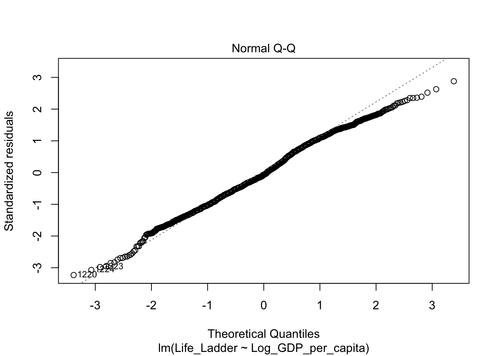

13 Введение в анализ данных в R
Эта книжка написана с помощью языка программирования и обработки данных R и пакета Bookdown в среде работы с данными RStudio.
Чтобы начать в ней работать, нужно скачать и установить сам язык R https://cran.r-project.org/ и скачать и установить RStudio, среду для работы https://posit.co/downloads/.
13.1 Данные и переменные
Данные – это информация, представленная в форме, пригодной для хранения и обработки человеком или информационными системами (ISO/IEC/IEEE 24765-2010). Если данные представлены в форме для обработки информационными системами, они формализованы.
Переменная – это оболочка, которую мы задаем, чтобы хранить в ней данные и выполнять операции с ними. У переменной есть название и те данные, которая она хранит.
13.1.1 Основные типы данных
- Числовой (целые числа – integer или numeric, вещественные числа – real, числа с плавающей точкой (дробные) – float)
- Текстовый (character, если один символ, или string – много символов)
- Логический (logical или boolean – принимает только значения True / False)
- NA – пропущенные значения (not available)
- NaN – not a number, результат выполнения невозможной числовой операции (например, деление на 0)
13.1.2 Основные структуры данных
- Вектор (vector) – одномерный массив одного типа данных
- Массив (array) – многомерный массив одного типа данных, состоящий из векторов одной длины
- Матрица (matrix) – двумерный массив только числовых данных
- Список (list) – по сути, многомерный массив, но может состоять из векторов разной длины и иметь данные разных типв
- Данные, датафрейм (dataframe) – по сути, cписок, но все вектора одной длины
 https://practicum.yandex.ru/blog/10-osnovnyh-struktur-dannyh/
https://practicum.yandex.ru/blog/10-osnovnyh-struktur-dannyh/
13.2 Операции с переменными и функции
В зависимости от того, с переменными какого типа мы работаем, мы можем выполнять с ними разные операции.
Операция – это выполнение каких-либо действий над данными. То, что выполняет это действие, называется оператором или функцией. Разница между ними в том, что оператор выполняет атомарные (единичные и простые действия), например, оператором может быть знак сложения, деления, больше или меньше и тд. Функция делает более сложные действия: например, создать вектор с помощью функции c(), прочитать данные с помощью функции read_csv(), отфильтровать данные с помощью функции select(). Обратите внимание, что при вызове функции после ее названия всегда ставятся круглые скобки.
| Тип данных | Возможные атомарные операции |
|---|---|
| Числовой | = (присвоение), +, -, /, *, % |
| Текстовый | = (присвоение),+ (конкатенация), поиск по определенному символу |
| Логический | = (присвоение),>, <, == (равно), != (не равно) |
# создание векторов
c(1, 2, 3, 4, 5) # c() -- это функция## [1] 1 2 3 4 5c(1, 2, 3, 4, 5, 7, 21, 143)## [1] 1 2 3 4 5 7 21 1431:5 #функция перечисления всех значений от 1 до 5## [1] 1 2 3 4 51:10 #функция перечисления всех значений от 1 до 10## [1] 1 2 3 4 5 6 7 8 9 10seq(1, 10, 2) # функция перечисления всех значений от 1 до 10 с шагом 2## [1] 1 3 5 7 9#пример приведения типов -- TRUE и FALSE превратились в 1 и 0
c(1, 2, 3, 4, 5, TRUE, FALSE)## [1] 1 2 3 4 5 1 0c(1, 2, 3, 4, 5, "1", "0")## [1] "1" "2" "3" "4" "5" "1" "0"# логические выражения
a <- 5
b <- 10
a > b## [1] FALSEa >= b## [1] FALSEa == b## [1] FALSEa != b## [1] TRUEa <= b## [1] TRUEa < b## [1] TRUE#функция, которая выполняет действия в зависимости от условия ...если ... то:
# ifelse() содержит 3 аргумента: ( условие; что делать, если условие верно;
# что делать, если условие ложно)
ifelse(a < b, a+b, "а не меньше b")## [1] 1513.3 Начало работы в среде
В этом учебнике я буду приводить задания для тренировки в любой среде работы с данными и код работы с данными в R.
Для большинства интересных операций в R нам понадобятся дополнительные пакеты – набор функций, которые уже кто-то написал за нас (то же самое, как, например, import numpy as np в питоне). Нам в основном понадобится пакет tidyverse, дословно – “вселенная чистых данных`. Сразу скажу, что все помеченной символом # – это комментарии, наши подсказки, которые не будут исполняться. Их важно всего оставлять для себя, чтобы не забыть, что вообще здесь происходит.
Чтобы пакет заработал, его нужно 1. установить и 2. подключить
# устанавливаем пакет
install.packages("tidyverse")# подключаем пакет
library(tidyverse)Установить пакет достаточно всего один раз после установки R, подключать через library нужно всегда, когда открываем RStudio. Ошибка вида “could not find function” в 99% случаев говорит о том, что пакет, из которого она используется, не подключен.
13.4 Начало работы с данными
Мы будем работать с данными World Happiness Report за 2016 год https://www.kaggle.com/datasets/unsdsn/world-happiness. Это Всемирный доклад о счастье https://en.wikipedia.org/wiki/World_Happiness_Report , которой показывает, как жители разных стран оценивают свой уровень счастья. В данных за 2016 год, с которыми мы будем работать, участвую 157 стран. Кстати, вы можете скачать данные за разные года и посмотреть, как менялось количество стран-участниц? Чуть позже мы научимся делать это с помощью кода. Здесь есть следующие переменные:
- Happiness Rank - позиция в рейтинге
- Happiness Score - абсолютное значение, набранное по уровню счастья
- SE - стандартная ошибка
- Economy - ВВП на душу населения
- Family - Социальная поддержка, ощущение семье
- Health - Продолжительность жизни
- Freedom - Свободы
- Trust (Goverment Corruption) - воспринимаемый уровень коррупции
- Generosity - сколько жертвуют на благотворительность
- Dystopia - страна-антиутопия, где самые низкие показатели по всем парметрам из существующих
Economy, Family, Health, Freedom, Trust, Generosity – 6 показателей, по которым считается уровень счастья.
Чтобы совершать операции с данными, их сначала нужно прочитать, загрузить в среду работы с данными. В современных традициях R это проще всего сделать с помощью функции read_csv() из пакета tidyverse. Не забывайте, что любой вызов функции сопровождается круглыми скобками, в которые передаются аргументы. В функции read_csv()в скобках нужно передать путь к файлу, который мы хотим прочитать.Его можно скопировать через свойства файла. Но чтобы не заморачиваться с путем, проще всего положить файл с данными в ту же папку, где и лежит наш сам файл с кодом (для этого его нужно сохранить). А самое элегентное и используемое решение – создать проект File - New Project, и хранить все файл в папке проекта, это уберагает от большого числа ошибок. Про импорт файлов очень подробно расписано у Ивана Позднякова https://pozdniakov.github.io/tidy_stats/030-import_data.html
whr <- read_csv("2016.csv") # читаем данные
View(whr) # просматриваем, что получилось передать в объект с названием whr Теперь я хочу поизучать эти данные. Помните, с чего мы начинаем изучение данных? С описательных статистик
Я могу отобрать все переменные по одной и посчитать для них среднее и стандартное отклонение – это то, что в Jamovi находится во вкладке Descriptives. Так как колонка существует не в вакууме, а внутри датасета, то нам необходимо как-то указать, что нас интересует конкретная колонка внутри конкретного датасета. Пока что проще всего это сделать – с помощью значка $:
whr$Family # отбираем всю колонку ## [1] 1.16374 1.14524 1.18326 1.12690 1.13464 1.09610 1.02912 1.17278 1.10476
## [10] 1.08764 0.99537 1.08383 1.04782 1.02152 1.08113 1.09774 1.03938 1.05249
## [19] 1.16157 1.03999 0.71460 0.86758 1.08672 0.90587 0.98912 1.06612 1.00793
## [28] 0.87114 1.03143 1.09879 1.02169 1.00508 1.04477 0.84829 0.92624 0.87964
## [37] 1.12945 0.83309 0.87119 0.77866 0.87758 0.94397 0.98569 1.03302 1.08268
## [46] 0.80975 0.88025 0.89521 1.16810 1.04167 0.85974 0.68655 1.06054 0.95544
## [55] 0.83132 1.05261 1.04685 0.72194 0.83779 1.06411 1.04993 0.81826 1.05613
## [64] 0.81255 1.03817 0.75695 0.95076 0.95025 0.70697 1.11111 0.72803 1.05163
## [73] 0.96372 0.60809 0.87021 0.33613 0.66062 0.87717 0.87625 0.86216 0.76042
## [82] 0.87877 0.79381 0.90836 0.95434 0.81329 0.64367 0.74173 0.99496 0.38595
## [91] 0.93164 0.26135 0.64184 0.94367 0.78236 0.79117 0.75862 0.43165 0.75473
## [100] 0.75602 1.08983 0.54970 0.64498 0.75596 0.38857 0.63760 0.69699 0.71629
## [109] 0.50163 0.24749 0.62800 0.59205 0.70362 0.62542 0.37932 0.96053 0.84783
## [118] 0.29247 0.69981 0.49813 0.62477 0.76240 1.01413 0.49353 0.80676 0.19249
## [127] 0.47799 0.77416 0.92542 0.84142 0.71478 0.14700 0.81928 0.72368 0.86333
## [136] 0.29561 0.89186 0.60323 0.57576 0.53750 0.66366 0.60530 0.18519 0.63178
## [145] 0.63054 0.90981 0.47493 0.46115 0.77623 0.50353 0.31090 0.61586 0.10419
## [154] 0.11037 0.00000 0.14866 0.23442Или можем вспомнить, что датафрейм имеет два измерения, как и двумерный массив, и можем обратиться по индексу (в квадртных скобках): номер строки (первое число) и номер колонки (второе число). Если нас интересует не конкретная строка, а все строки, то на месте этого индекс ничего не ставится, как бы пропускаем его.
whr[,8] # отбираем всю колонку другим способом## # A tibble: 157 × 1
## Family
## <dbl>
## 1 1.16
## 2 1.15
## 3 1.18
## 4 1.13
## 5 1.13
## 6 1.10
## 7 1.03
## 8 1.17
## 9 1.10
## 10 1.09
## # … with 147 more rowsОбратите внимание на выдачу: как вы думаете, какым структурам данных принадлежат результаты первого и второго способа?
Посчитаем среднее и стандартное отклонение для этой колонки
mean(whr$Family) # среднее## [1] 0.7936211sd(whr$Family) # стандартное отклонение## [1] 0.266705713.5 Задания после семинара 2
- Прочитайте в среде, в которой вы работаете, данные WHR за 2016 год.
- Посчитайте среднее, стандартное отклонение, медиану и размах (разброс от максимального до минимального значения) по всем 6 показателям, составляющим уровень счастья. Что можно сказать про них? Где самый большой размах? Где среднее и медиана оказались близко друг к другу, а где не очень? (для подсчета медианы и размаха в R нужно будет немножко поучиться гуглить или использовать другие материалы)
13.6 Предобработка данных
После того, как мы считали данные данные в переменную (мы использовали функцию read_csv() для этого), часто нужно эти данные сначала предобработать. Во-первых, данные сами по себе могут быть не очень хорошего качества, и их нужно почистить. Во-вторых, мы никогда не работаем со всей табличкй сразу – мы отбираем данные, например, определенную колонку, и часто нам нужны не все данные, а только соответствующие определенным условиям (например, нам нужно отобрать время реакции в группе, где испытуемые употребляли кофеин, а не плацебо).
В предобработку данных чаще всего входит:
- Отбор определенных колонок
- Фильтрация – отбор определенных строк, удовлетворяющих определенным условиям
- Создание новых колонок и заполнение их в соответствии с определенными услвиями
- Работа с пропущенными значениями – удаление или замена на какое-либо (например, среднее) значение
Пойдем по порядку.
13.6.1 Отбор колонок
Любое почти всегда можно сделать разными способами. Чаще всего не существует правильного, если работает – значит, правильно. Но некоторые решения бывает более оптимальными в разных контекстах. Рассмотрим разные способы отбора колонок. Обратите внимание, чем они различаются?
Сразу комментарий – когда мы делаем операцию присвоения <-, у нас ничего не выводится в консоль. Чтобы посмотреть, что мы присвоили переменной, можно вывести ее по названию или, если речь про данные – посмотреть с помощью функции View(). Если вы только пробуете написать операцию – не спешите присваивать ее в переменную! Так мы сразу будем видеть результат в консоли, и если он ошибочный, это будет понятно.
Отбор в базовом R по названию колонки
var1 <- whr$`Happiness Score`
var1## [1] 7.526 7.509 7.501 7.498 7.413 7.404 7.339 7.334 7.313 7.291 7.267 7.119
## [13] 7.104 7.087 7.039 6.994 6.952 6.929 6.907 6.871 6.778 6.739 6.725 6.705
## [25] 6.701 6.650 6.596 6.573 6.545 6.488 6.481 6.478 6.474 6.379 6.379 6.375
## [37] 6.361 6.355 6.324 6.269 6.239 6.218 6.168 6.084 6.078 6.068 6.005 5.992
## [49] 5.987 5.977 5.976 5.956 5.921 5.919 5.897 5.856 5.835 5.835 5.822 5.813
## [61] 5.802 5.771 5.768 5.743 5.658 5.648 5.615 5.560 5.546 5.538 5.528 5.517
## [73] 5.510 5.488 5.458 5.440 5.401 5.389 5.314 5.303 5.291 5.279 5.245 5.196
## [85] 5.185 5.177 5.163 5.161 5.155 5.151 5.145 5.132 5.129 5.123 5.121 5.061
## [97] 5.057 5.045 5.033 4.996 4.907 4.876 4.875 4.871 4.813 4.795 4.793 4.754
## [109] 4.655 4.643 4.635 4.575 4.574 4.513 4.508 4.459 4.415 4.404 4.395 4.362
## [121] 4.360 4.356 4.324 4.276 4.272 4.252 4.236 4.219 4.217 4.201 4.193 4.156
## [133] 4.139 4.121 4.073 4.028 3.974 3.956 3.916 3.907 3.866 3.856 3.832 3.763
## [145] 3.739 3.739 3.724 3.695 3.666 3.622 3.607 3.515 3.484 3.360 3.303 3.069
## [157] 2.905str(var1)## num [1:157] 7.53 7.51 7.5 7.5 7.41 ...Отбор в базовом R по индексу
Индекс – это номер элемента в структуре данных. Мы говорили про них, когда обсуждали многомерные массивы: в одномерной структуре, например, векторе, индекс будет состоять из одного числа, в двумернй (например, матрице или датафрейме) – индекс состоит из двух чисел, разделенных запятой, в трехмерной – из трех, и так далее. Индекс в R всегда пишется в квадратных скобках, например, чтобы узнать, что находится во второй строчке третьего столбца, индекс элемента будет [2,3].
Сначала идет номер строки, затем – номер столбца. Если мы хотим вывести все строки или все столбцы – на месте этого индекса ничего не ставится. Например, если я хочу вывести все строки из третьей колонки, я напишу [,3]
var2 <- whr[,4]
var2## # A tibble: 157 × 1
## `Happiness Score`
## <dbl>
## 1 7.53
## 2 7.51
## 3 7.50
## 4 7.50
## 5 7.41
## 6 7.40
## 7 7.34
## 8 7.33
## 9 7.31
## 10 7.29
## # … with 147 more rowsstr(var2)## tibble [157 × 1] (S3: tbl_df/tbl/data.frame)
## $ Happiness Score: num [1:157] 7.53 7.51 7.5 7.5 7.41 ...Отбор с помощью пакета tidyverse по названию
Сначала пара важных моментов отнсосительно работы с пакетом и кульурой написания кода tidyverse. Последовательность операций в рамках одной задачи пишется построчно с переносом на следующую строку в виде пайпа %>% – символа, который позволяет испльзовать в качестве аргумента функции следующей строки то, что получилось в результате выполнения предыдущей. На первой строке в пайп передаются сами данные, то есть название переменной, в которую мы их записали. Далее на каждой следующей строке в качестве первого аргумента функции в скобках будет применяться результат выполнения предыдущей. Подробнее про tidyverse https://pozdniakov.github.io/tidy_stats/110-tidyverse_basic.html и про пайпы https://pozdniakov.github.io/tidy_stats/110-tidyverse_basic.html
Внутри tidyverse используется такая структура данных, как tibble(https://tibble.tidyverse.org/). Тиббл – это модицифированный датафрейм, о чем мы уже говорили, когда обсуждали структуры данных
Вывод в датафрейм (тиббл):
var3 <- whr %>%
select(`Happiness Score`)
var3## # A tibble: 157 × 1
## `Happiness Score`
## <dbl>
## 1 7.53
## 2 7.51
## 3 7.50
## 4 7.50
## 5 7.41
## 6 7.40
## 7 7.34
## 8 7.33
## 9 7.31
## 10 7.29
## # … with 147 more rows#смотрим структуру данных
str(var3)## tibble [157 × 1] (S3: tbl_df/tbl/data.frame)
## $ Happiness Score: num [1:157] 7.53 7.51 7.5 7.5 7.41 ...С помощью функции select() мы можем вытаскивать даже не одну колонку, а несколько:
whr %>%
select(Country,`Happiness Score`)## # A tibble: 157 × 2
## Country `Happiness Score`
## <chr> <dbl>
## 1 Denmark 7.53
## 2 Switzerland 7.51
## 3 Iceland 7.50
## 4 Norway 7.50
## 5 Finland 7.41
## 6 Canada 7.40
## 7 Netherlands 7.34
## 8 New Zealand 7.33
## 9 Australia 7.31
## 10 Sweden 7.29
## # … with 147 more rowsОтбор с помощью пакета tidyverse по названию
Обратите внимание – предыдущий вывод так же является тибблом, а не вектором. Чтобы вывести в вектор, надо выполнить еще один шаг с помощью функции pull(), которая как бы “вытягивает” значения из тиббла:
var4 <- whr %>%
select(`Happiness Score`) %>%
pull()
var4## [1] 7.526 7.509 7.501 7.498 7.413 7.404 7.339 7.334 7.313 7.291 7.267 7.119
## [13] 7.104 7.087 7.039 6.994 6.952 6.929 6.907 6.871 6.778 6.739 6.725 6.705
## [25] 6.701 6.650 6.596 6.573 6.545 6.488 6.481 6.478 6.474 6.379 6.379 6.375
## [37] 6.361 6.355 6.324 6.269 6.239 6.218 6.168 6.084 6.078 6.068 6.005 5.992
## [49] 5.987 5.977 5.976 5.956 5.921 5.919 5.897 5.856 5.835 5.835 5.822 5.813
## [61] 5.802 5.771 5.768 5.743 5.658 5.648 5.615 5.560 5.546 5.538 5.528 5.517
## [73] 5.510 5.488 5.458 5.440 5.401 5.389 5.314 5.303 5.291 5.279 5.245 5.196
## [85] 5.185 5.177 5.163 5.161 5.155 5.151 5.145 5.132 5.129 5.123 5.121 5.061
## [97] 5.057 5.045 5.033 4.996 4.907 4.876 4.875 4.871 4.813 4.795 4.793 4.754
## [109] 4.655 4.643 4.635 4.575 4.574 4.513 4.508 4.459 4.415 4.404 4.395 4.362
## [121] 4.360 4.356 4.324 4.276 4.272 4.252 4.236 4.219 4.217 4.201 4.193 4.156
## [133] 4.139 4.121 4.073 4.028 3.974 3.956 3.916 3.907 3.866 3.856 3.832 3.763
## [145] 3.739 3.739 3.724 3.695 3.666 3.622 3.607 3.515 3.484 3.360 3.303 3.069
## [157] 2.905#смотрим структуру данных
str(var4)## num [1:157] 7.53 7.51 7.5 7.5 7.41 ...В этом случае мы можем даже в этом же пайпе посчитать медиану или среднее:
whr %>%
select(`Happiness Score`) %>% #результат -- тиббл
pull() %>% #результат -- вектор
median()## [1] 5.314А так будет ошибка
whr %>%
select(`Happiness Score`) %>% #результат -- тиббл
median()13.6.2 Фильтрация (отбор строк)
Очень часто встает задача фильтрации строк: когда нужны не все данные, а удовлетворяющие какому-либо условию
whr[1:10,]## # A tibble: 10 × 13
## Country Region Happi…¹ Happi…² Lower…³ Upper…⁴ Econo…⁵ Family Healt…⁶ Freedom
## <chr> <chr> <dbl> <dbl> <dbl> <dbl> <dbl> <dbl> <dbl> <dbl>
## 1 Denmark Weste… 1 7.53 7.46 7.59 1.44 1.16 0.795 0.579
## 2 Switze… Weste… 2 7.51 7.43 7.59 1.53 1.15 0.863 0.586
## 3 Iceland Weste… 3 7.50 7.33 7.67 1.43 1.18 0.867 0.566
## 4 Norway Weste… 4 7.50 7.42 7.58 1.58 1.13 0.796 0.596
## 5 Finland Weste… 5 7.41 7.35 7.48 1.41 1.13 0.811 0.571
## 6 Canada North… 6 7.40 7.34 7.47 1.44 1.10 0.828 0.574
## 7 Nether… Weste… 7 7.34 7.28 7.39 1.46 1.03 0.812 0.552
## 8 New Ze… Austr… 8 7.33 7.26 7.40 1.36 1.17 0.831 0.581
## 9 Austra… Austr… 9 7.31 7.24 7.38 1.44 1.10 0.851 0.568
## 10 Sweden Weste… 10 7.29 7.23 7.36 1.45 1.09 0.831 0.582
## # … with 3 more variables: `Trust (Government Corruption)` <dbl>,
## # Generosity <dbl>, `Dystopia Residual` <dbl>, and abbreviated variable names
## # ¹`Happiness Rank`, ²`Happiness Score`, ³`Lower Confidence Interval`,
## # ⁴`Upper Confidence Interval`, ⁵`Economy (GDP per Capita)`,
## # ⁶`Health (Life Expectancy)`whr %>%
slice(1:10)## # A tibble: 10 × 13
## Country Region Happi…¹ Happi…² Lower…³ Upper…⁴ Econo…⁵ Family Healt…⁶ Freedom
## <chr> <chr> <dbl> <dbl> <dbl> <dbl> <dbl> <dbl> <dbl> <dbl>
## 1 Denmark Weste… 1 7.53 7.46 7.59 1.44 1.16 0.795 0.579
## 2 Switze… Weste… 2 7.51 7.43 7.59 1.53 1.15 0.863 0.586
## 3 Iceland Weste… 3 7.50 7.33 7.67 1.43 1.18 0.867 0.566
## 4 Norway Weste… 4 7.50 7.42 7.58 1.58 1.13 0.796 0.596
## 5 Finland Weste… 5 7.41 7.35 7.48 1.41 1.13 0.811 0.571
## 6 Canada North… 6 7.40 7.34 7.47 1.44 1.10 0.828 0.574
## 7 Nether… Weste… 7 7.34 7.28 7.39 1.46 1.03 0.812 0.552
## 8 New Ze… Austr… 8 7.33 7.26 7.40 1.36 1.17 0.831 0.581
## 9 Austra… Austr… 9 7.31 7.24 7.38 1.44 1.10 0.851 0.568
## 10 Sweden Weste… 10 7.29 7.23 7.36 1.45 1.09 0.831 0.582
## # … with 3 more variables: `Trust (Government Corruption)` <dbl>,
## # Generosity <dbl>, `Dystopia Residual` <dbl>, and abbreviated variable names
## # ¹`Happiness Rank`, ²`Happiness Score`, ³`Lower Confidence Interval`,
## # ⁴`Upper Confidence Interval`, ⁵`Economy (GDP per Capita)`,
## # ⁶`Health (Life Expectancy)`whr %>%
filter(Region == "Central and Eastern Europe") ## # A tibble: 29 × 13
## Country Region Happi…¹ Happi…² Lower…³ Upper…⁴ Econo…⁵ Family Healt…⁶ Freedom
## <chr> <chr> <dbl> <dbl> <dbl> <dbl> <dbl> <dbl> <dbl> <dbl>
## 1 Czech … Centr… 27 6.60 6.52 6.68 1.31 1.01 0.764 0.414
## 2 Slovak… Centr… 45 6.08 6.00 6.16 1.28 1.08 0.704 0.234
## 3 Uzbeki… Centr… 49 5.99 5.90 6.08 0.736 1.17 0.502 0.608
## 4 Kazakh… Centr… 54 5.92 5.84 6.00 1.23 0.955 0.574 0.405
## 5 Moldova Centr… 55 5.90 5.82 5.97 0.692 0.831 0.523 0.252
## 6 Russia Centr… 56 5.86 5.79 5.92 1.23 1.05 0.590 0.327
## 7 Poland Centr… 57 5.84 5.75 5.92 1.25 1.05 0.691 0.452
## 8 Lithua… Centr… 60 5.81 5.73 5.89 1.27 1.06 0.647 0.189
## 9 Belarus Centr… 61 5.80 5.72 5.88 1.13 1.05 0.631 0.291
## 10 Sloven… Centr… 63 5.77 5.68 5.85 1.30 1.06 0.792 0.532
## # … with 19 more rows, 3 more variables: `Trust (Government Corruption)` <dbl>,
## # Generosity <dbl>, `Dystopia Residual` <dbl>, and abbreviated variable names
## # ¹`Happiness Rank`, ²`Happiness Score`, ³`Lower Confidence Interval`,
## # ⁴`Upper Confidence Interval`, ⁵`Economy (GDP per Capita)`,
## # ⁶`Health (Life Expectancy)`А теперь отфильтруем эти значения и возьмем только те значения Happiness Score, которые соответствуют Центральной и восточной Европе
whr %>%
filter(Region == "Central and Eastern Europe") %>%
select(`Happiness Score`) ## # A tibble: 29 × 1
## `Happiness Score`
## <dbl>
## 1 6.60
## 2 6.08
## 3 5.99
## 4 5.92
## 5 5.90
## 6 5.86
## 7 5.84
## 8 5.81
## 9 5.80
## 10 5.77
## # … with 19 more rows.. и “вытащим” эти значения в числовой вектор, чтобы с ними было проще всего работать
whr %>%
filter(Region == "Central and Eastern Europe") %>%
select(`Happiness Score`) %>%
pull() ## [1] 6.596 6.078 5.987 5.919 5.897 5.856 5.835 5.813 5.802 5.768 5.658 5.560
## [13] 5.528 5.517 5.488 5.401 5.291 5.185 5.177 5.163 5.161 5.145 5.121 4.996
## [25] 4.655 4.360 4.324 4.252 4.217И посчитаем среднее
whr %>%
filter(Region == "Central and Eastern Europe") %>%
select(`Happiness Score`) %>%
pull() %>%
mean()## [1] 5.37069Теперь можем сравнить средний Happiness Score по всем странам (считали его ранее) и только по Центральной и восточной Европе. Что можно про них сказать?
Или посмотрим, какие страны находятся в топе-10 по Happiness Rank
whr %>%
filter(`Happiness Rank` <= 10) ## # A tibble: 10 × 13
## Country Region Happi…¹ Happi…² Lower…³ Upper…⁴ Econo…⁵ Family Healt…⁶ Freedom
## <chr> <chr> <dbl> <dbl> <dbl> <dbl> <dbl> <dbl> <dbl> <dbl>
## 1 Denmark Weste… 1 7.53 7.46 7.59 1.44 1.16 0.795 0.579
## 2 Switze… Weste… 2 7.51 7.43 7.59 1.53 1.15 0.863 0.586
## 3 Iceland Weste… 3 7.50 7.33 7.67 1.43 1.18 0.867 0.566
## 4 Norway Weste… 4 7.50 7.42 7.58 1.58 1.13 0.796 0.596
## 5 Finland Weste… 5 7.41 7.35 7.48 1.41 1.13 0.811 0.571
## 6 Canada North… 6 7.40 7.34 7.47 1.44 1.10 0.828 0.574
## 7 Nether… Weste… 7 7.34 7.28 7.39 1.46 1.03 0.812 0.552
## 8 New Ze… Austr… 8 7.33 7.26 7.40 1.36 1.17 0.831 0.581
## 9 Austra… Austr… 9 7.31 7.24 7.38 1.44 1.10 0.851 0.568
## 10 Sweden Weste… 10 7.29 7.23 7.36 1.45 1.09 0.831 0.582
## # … with 3 more variables: `Trust (Government Corruption)` <dbl>,
## # Generosity <dbl>, `Dystopia Residual` <dbl>, and abbreviated variable names
## # ¹`Happiness Rank`, ²`Happiness Score`, ³`Lower Confidence Interval`,
## # ⁴`Upper Confidence Interval`, ⁵`Economy (GDP per Capita)`,
## # ⁶`Health (Life Expectancy)`13.6.3 Создание колонок
Часто возникает задача перекодировать переменную – например, разбить непрерывные значения на группы, чтобы посмотреть различия между ними.
Например, продолжая предыдущий пример с фильтрацией первых 10 в рейтинге стран: для сравнения показателей, вклдывающихся в уровень счастья, нас может интересовать, отличаются ли “топовые” страны от всех остальных. Для этого нам проще создать отдельную колонку, которая служит индикатором, является ли страна “топовой”. Разберем, что это значит: нам нужно 1) создать новую колонку и 2) записать в нее значения, удовлятворяющие определенному условию. (1) достигается с помощью функции mutate() (как бы “измени” датафрейм, “примутируй” к нему колонку), а (2) достигается очень похожим на фильтрацию способом – с помощью функции ifelse (пример выше)
На паре топовые и не топовые страны превратились в hehe и not hehe, так и оставим.
whr_top <- whr %>%
mutate("Rank Category" = ifelse(`Happiness Rank` <=10, "hehe", "not hehe"))
View(whr_top)Если выведем датафрейм, увидим, что на последнем месте появилась новая колонка Rank Category.
Новые значения могут соответствовать и какой-либо математической операции, например, создадим новую колонку, показывающую, во сколько раз уровень счастья в стране превышает значения страны-дистопии:
whr %>%
mutate("Times" = `Happiness Score` / `Dystopia Residual`) %>%
View()13.6.4 Работа с пропущенными значениями (NA)
Как уже говорилось в разделе про типы данных, есть отдельный тип данных, который кодирует пропущенные значения – NA, Not Available. Это особенный тип, потому что из-за пропущенных значений мы не можем оценить данные целиком. Такие ситуации встречаются крайне часто, поэтому придуманы специальные способы обращения с NA.
Для изучения этого раздела нам понадобятся данные 2016-2 по ссылке https://raw.githubusercontent.com/elenary/StatsForDA/main/2016-2.csv (правая кнопка мыши – сохранить как)
whr_new <-read_csv("2016-2.csv")
# View(whr_new)Первая важная функция работы с промущенными значениями – это is.na(), проверка того, является ли каждый элемент вектора или датафрейма NA, и механизмы подсчета количества таких значений.
is.na(whr_new$`Happiness Score`)## [1] FALSE FALSE FALSE FALSE FALSE FALSE TRUE TRUE TRUE FALSE FALSE FALSE
## [13] TRUE FALSE TRUE FALSE FALSE FALSE FALSE FALSE FALSE FALSE FALSE FALSE
## [25] FALSE FALSE FALSE FALSE FALSE FALSE FALSE FALSE FALSE FALSE FALSE FALSE
## [37] FALSE FALSE FALSE FALSE FALSE FALSE FALSE FALSE FALSE FALSE FALSE FALSE
## [49] FALSE FALSE FALSE FALSE FALSE FALSE FALSE FALSE FALSE FALSE FALSE FALSE
## [61] FALSE FALSE FALSE FALSE FALSE FALSE FALSE FALSE FALSE FALSE FALSE FALSE
## [73] FALSE FALSE FALSE FALSE FALSE FALSE FALSE FALSE FALSE FALSE FALSE FALSE
## [85] FALSE FALSE FALSE FALSE FALSE FALSE FALSE FALSE FALSE FALSE FALSE FALSE
## [97] FALSE FALSE FALSE FALSE FALSE FALSE FALSE FALSE FALSE FALSE FALSE FALSE
## [109] FALSE FALSE FALSE FALSE FALSE FALSE FALSE FALSE FALSE FALSE FALSE FALSE
## [121] FALSE FALSE FALSE FALSE FALSE FALSE FALSE FALSE FALSE FALSE FALSE FALSE
## [133] FALSE FALSE FALSE FALSE FALSE FALSE FALSE FALSE FALSE FALSE FALSE FALSE
## [145] FALSE FALSE FALSE FALSE FALSE FALSE FALSE FALSE FALSE FALSE FALSE FALSE
## [157] FALSE#помним, что TRUE -- это 1, а FALSE -- 0. Поэтому можем перевести результаты в числовой вектор
as.numeric(is.na(whr_new$`Happiness Score`))## [1] 0 0 0 0 0 0 1 1 1 0 0 0 1 0 1 0 0 0 0 0 0 0 0 0 0 0 0 0 0 0 0 0 0 0 0 0 0
## [38] 0 0 0 0 0 0 0 0 0 0 0 0 0 0 0 0 0 0 0 0 0 0 0 0 0 0 0 0 0 0 0 0 0 0 0 0 0
## [75] 0 0 0 0 0 0 0 0 0 0 0 0 0 0 0 0 0 0 0 0 0 0 0 0 0 0 0 0 0 0 0 0 0 0 0 0 0
## [112] 0 0 0 0 0 0 0 0 0 0 0 0 0 0 0 0 0 0 0 0 0 0 0 0 0 0 0 0 0 0 0 0 0 0 0 0 0
## [149] 0 0 0 0 0 0 0 0 0#подсчет количества NA
sum(as.numeric(is.na(whr_new$`Happiness Score`)))## [1] 5sum(is.na(whr_new$`Happiness Score`))## [1] 5Одна из больших проблем с этими значениями – они мешают производить вычисления. Когда часть данных отсутствует, невозможно сказать, каково среднее выборки.
whr_new %>%
select(`Happiness Score`) %>%
pull() %>%
mean()## [1] NAmean(whr_new$`Happiness Score`)## [1] NAТак происходит, потому что невозможно прибавить, вычесть или даже сравнить с чем-то значение, которое недоступно
1 == NA## [1] NA"NA" == NA## [1] NANA == NA## [1] NAДля этого пропущенные значения обычно удаляют из рассмотрения. Например, с помощью функции na.omit() в базовом R или с помощью drop_na() в нотации tifdyverse. Важно! В зависимости от того, к чему мы применяем эту функции, мы либо удаляем NA из отобранной нами колонки, либо, если применяем ко всему датафрейму – удалятся все строки, в которых есть NA хотя бы в одной из колонок.
whr_new$`Happiness Score` ## [1] 7.526 7.509 7.501 7.498 7.413 7.404 NA NA NA 7.291 7.267 7.119
## [13] NA 7.087 NA 6.994 6.952 6.929 6.907 6.871 6.778 6.739 6.725 6.705
## [25] 6.701 6.650 6.596 6.573 6.545 6.488 6.481 6.478 6.474 6.379 6.379 6.375
## [37] 6.361 6.355 6.324 6.269 6.239 6.218 6.168 6.084 6.078 6.068 6.005 5.992
## [49] 5.987 5.977 5.976 5.956 5.921 5.919 5.897 5.856 5.835 5.835 5.822 5.813
## [61] 5.802 5.771 5.768 5.743 5.658 5.648 5.615 5.560 5.546 5.538 5.528 5.517
## [73] 5.510 5.488 5.458 5.440 5.401 5.389 5.314 5.303 5.291 5.279 5.245 5.196
## [85] 5.185 5.177 5.163 5.161 5.155 5.151 5.145 5.132 5.129 5.123 5.121 5.061
## [97] 5.057 5.045 5.033 4.996 4.907 4.876 4.875 4.871 4.813 4.795 4.793 4.754
## [109] 4.655 4.643 4.635 4.575 4.574 4.513 4.508 4.459 4.415 4.404 4.395 4.362
## [121] 4.360 4.356 4.324 4.276 4.272 4.252 4.236 4.219 4.217 4.201 4.193 4.156
## [133] 4.139 4.121 4.073 4.028 3.974 3.956 3.916 3.907 3.866 3.856 3.832 3.763
## [145] 3.739 3.739 3.724 3.695 3.666 3.622 3.607 3.515 3.484 3.360 3.303 3.069
## [157] 2.905mean(whr_new$`Happiness Score`) # выдает NA## [1] NAmean(na.omit(whr_new$`Happiness Score`)) # выдает среднее## [1] 5.321539# выдает NA
whr_new %>%
select(`Happiness Score`) %>%
pull() %>%
mean()## [1] NA# выдает среднее
whr_new %>%
select(`Happiness Score`) %>%
drop_na() %>%
pull() %>%
mean()## [1] 5.321539# обратите внимание -- так тоже работает, но среднее другое! Почему?
whr_new %>%
drop_na() %>%
select(`Happiness Score`) %>%
pull() %>%
mean()## [1] 5.266447Для работы конкретно с описательным статистиками и аггрегирующими функциями вроде суммы еще есть один лайфхак работы с пропущенными значениями – аргумент na.rm = TRUE внутри функций mean(), median(), sum(). na.rm = TRUE буквально значит “na remove = true”
# через базовый R
mean(whr_new$`Happiness Score`, na.rm = TRUE)## [1] 5.321539# или с помощью тайдиверс
whr_new %>%
select(`Happiness Score`) %>%
pull() %>%
mean(na.rm = TRUE)## [1] 5.32153913.6.5 Сортировка
Еще одна часто встречающая задача – отсортировать датафрейм по возрастанию или убыванию одной переменной.
В базовом R когда у нас есть только один вектор, мы можем сделать это так
sort(whr_new$`Happiness Score`)## [1] 2.905 3.069 3.303 3.360 3.484 3.515 3.607 3.622 3.666 3.695 3.724 3.739
## [13] 3.739 3.763 3.832 3.856 3.866 3.907 3.916 3.956 3.974 4.028 4.073 4.121
## [25] 4.139 4.156 4.193 4.201 4.217 4.219 4.236 4.252 4.272 4.276 4.324 4.356
## [37] 4.360 4.362 4.395 4.404 4.415 4.459 4.508 4.513 4.574 4.575 4.635 4.643
## [49] 4.655 4.754 4.793 4.795 4.813 4.871 4.875 4.876 4.907 4.996 5.033 5.045
## [61] 5.057 5.061 5.121 5.123 5.129 5.132 5.145 5.151 5.155 5.161 5.163 5.177
## [73] 5.185 5.196 5.245 5.279 5.291 5.303 5.314 5.389 5.401 5.440 5.458 5.488
## [85] 5.510 5.517 5.528 5.538 5.546 5.560 5.615 5.648 5.658 5.743 5.768 5.771
## [97] 5.802 5.813 5.822 5.835 5.835 5.856 5.897 5.919 5.921 5.956 5.976 5.977
## [109] 5.987 5.992 6.005 6.068 6.078 6.084 6.168 6.218 6.239 6.269 6.324 6.355
## [121] 6.361 6.375 6.379 6.379 6.474 6.478 6.481 6.488 6.545 6.573 6.596 6.650
## [133] 6.701 6.705 6.725 6.739 6.778 6.871 6.907 6.929 6.952 6.994 7.087 7.119
## [145] 7.267 7.291 7.404 7.413 7.498 7.501 7.509 7.526sort(whr_new$`Happiness Score`, decreasing = TRUE)## [1] 7.526 7.509 7.501 7.498 7.413 7.404 7.291 7.267 7.119 7.087 6.994 6.952
## [13] 6.929 6.907 6.871 6.778 6.739 6.725 6.705 6.701 6.650 6.596 6.573 6.545
## [25] 6.488 6.481 6.478 6.474 6.379 6.379 6.375 6.361 6.355 6.324 6.269 6.239
## [37] 6.218 6.168 6.084 6.078 6.068 6.005 5.992 5.987 5.977 5.976 5.956 5.921
## [49] 5.919 5.897 5.856 5.835 5.835 5.822 5.813 5.802 5.771 5.768 5.743 5.658
## [61] 5.648 5.615 5.560 5.546 5.538 5.528 5.517 5.510 5.488 5.458 5.440 5.401
## [73] 5.389 5.314 5.303 5.291 5.279 5.245 5.196 5.185 5.177 5.163 5.161 5.155
## [85] 5.151 5.145 5.132 5.129 5.123 5.121 5.061 5.057 5.045 5.033 4.996 4.907
## [97] 4.876 4.875 4.871 4.813 4.795 4.793 4.754 4.655 4.643 4.635 4.575 4.574
## [109] 4.513 4.508 4.459 4.415 4.404 4.395 4.362 4.360 4.356 4.324 4.276 4.272
## [121] 4.252 4.236 4.219 4.217 4.201 4.193 4.156 4.139 4.121 4.073 4.028 3.974
## [133] 3.956 3.916 3.907 3.866 3.856 3.832 3.763 3.739 3.739 3.724 3.695 3.666
## [145] 3.622 3.607 3.515 3.484 3.360 3.303 3.069 2.905В тайдиверс – с помощью функции arrange(), где в качестве аргумента передается название колонки, по которой будем делать сортировку. А если нам нужно указать, что сортировка должна быть по убыванию, от большого к меньшего – необходимо вставить аргумент desc()
whr_new %>%
drop_na() %>%
select(`Happiness Score`) %>%
arrange(`Happiness Score`) # сортировка по возрастанию## # A tibble: 132 × 1
## `Happiness Score`
## <dbl>
## 1 2.90
## 2 3.07
## 3 3.30
## 4 3.36
## 5 3.48
## 6 3.52
## 7 3.62
## 8 3.67
## 9 3.70
## 10 3.74
## # … with 122 more rowswhr_new %>%
drop_na() %>%
select(`Happiness Score`) %>%
arrange(desc(`Happiness Score`)) # сортировка по убыванию## # A tibble: 132 × 1
## `Happiness Score`
## <dbl>
## 1 7.53
## 2 7.51
## 3 7.50
## 4 7.29
## 5 7.12
## 6 6.99
## 7 6.95
## 8 6.91
## 9 6.87
## 10 6.78
## # … with 122 more rowsСамое интересное здесь – что мы можем сортировать весь датафрейм по значениям одной переменной
whr_new %>%
drop_na() %>%
arrange(Freedom) # сорируем по значениям переменной Freedom## # A tibble: 132 × 13
## Country Region Happi…¹ Happi…² Lower…³ Upper…⁴ Econo…⁵ Family Healt…⁶ Freedom
## <chr> <chr> <dbl> <dbl> <dbl> <dbl> <dbl> <dbl> <dbl> <dbl>
## 1 Sudan Sub-S… 133 4.14 3.93 4.35 0.631 0.819 0.298 0
## 2 Angola Sub-S… 141 3.87 3.75 3.98 0.847 0.664 0.05 0.00589
## 3 Burundi Sub-S… 157 2.90 2.73 3.08 0.068 0.234 0.157 0.0432
## 4 Greece Weste… 99 5.03 4.93 5.13 1.25 0.755 0.8 0.0582
## 5 Syria Middl… 156 3.07 2.94 3.20 0.747 0.149 0.63 0.0691
## 6 Bosnia… Centr… 87 5.16 5.06 5.26 0.934 0.644 0.708 0.0951
## 7 Haiti Latin… 136 4.03 3.89 4.16 0.341 0.296 0.275 0.121
## 8 Maurit… Sub-S… 130 4.20 4.13 4.28 0.614 0.841 0.286 0.127
## 9 Ukraine Centr… 123 4.32 4.24 4.41 0.873 1.01 0.586 0.129
## 10 Madaga… Sub-S… 148 3.70 3.62 3.77 0.28 0.461 0.371 0.137
## # … with 122 more rows, 3 more variables:
## # `Trust (Government Corruption)` <dbl>, Generosity <dbl>,
## # `Dystopia Residual` <dbl>, and abbreviated variable names
## # ¹`Happiness Rank`, ²`Happiness Score`, ³`Lower Confidence Interval`,
## # ⁴`Upper Confidence Interval`, ⁵`Economy (GDP per Capita)`,
## # ⁶`Health (Life Expectancy)`whr_new %>%
drop_na() %>%
arrange(`Trust (Government Corruption)`) # сорируем по значениям переменной Trust## # A tibble: 132 × 13
## Country Region Happi…¹ Happi…² Lower…³ Upper…⁴ Econo…⁵ Family Healt…⁶ Freedom
## <chr> <chr> <dbl> <dbl> <dbl> <dbl> <dbl> <dbl> <dbl> <dbl>
## 1 Bosnia… Centr… 87 5.16 5.06 5.26 0.934 0.644 0.708 0.0951
## 2 Bulgar… Centr… 129 4.22 4.10 4.33 1.11 0.925 0.678 0.212
## 3 Romania Centr… 71 5.53 5.43 5.63 1.17 0.728 0.676 0.367
## 4 Trinid… Latin… 43 6.17 5.95 6.39 1.33 0.986 0.526 0.485
## 5 Portug… Weste… 94 5.12 5.03 5.22 1.28 0.944 0.794 0.447
## 6 Lithua… Centr… 60 5.81 5.73 5.89 1.27 1.06 0.647 0.189
## 7 Ukraine Centr… 123 4.32 4.24 4.41 0.873 1.01 0.586 0.129
## 8 Moldova Centr… 55 5.90 5.82 5.97 0.692 0.831 0.523 0.252
## 9 Italy Weste… 50 5.98 5.90 6.06 1.36 1.04 0.851 0.188
## 10 China Easte… 83 5.24 5.20 5.29 1.03 0.794 0.736 0.440
## # … with 122 more rows, 3 more variables:
## # `Trust (Government Corruption)` <dbl>, Generosity <dbl>,
## # `Dystopia Residual` <dbl>, and abbreviated variable names
## # ¹`Happiness Rank`, ²`Happiness Score`, ³`Lower Confidence Interval`,
## # ⁴`Upper Confidence Interval`, ⁵`Economy (GDP per Capita)`,
## # ⁶`Health (Life Expectancy)`13.7 Задания после семинара 3
- Выполните все примеры, которые есть в этом разделе, убедитесь, что все работает верно.
- Посмотрите, какие страны находятся на местах с 1 по 10 и с 147 по 157 (в выводе должно быть по две колонки:
RegionиHappiness Rank) - Сравните средний показатель экономики
Economy (GDP per Capita)и уровень счастьяHappiness Scoreв странах Восточной и центральной (Central and Eastern Europe) и Западной Европы (Western Europe). Что можно сказать про них? Где показатель экономики выше? Где люди чувствуют себя счастливее? - Сравните средний показатель экономики
Economy (GDP per Capita)и уровень счастьяHappiness Scoreв странах Западной Европы (Western Europe) и Южной Азии (Southern Asia). Что можно сказать про них? Где показатель экономики выше? Где люди чувствуют себя счастливее? - (Только для тех, кто работает в R) Посчитайте средний
Happiness Scoreпо всем странам и выведете страны, которые лежат в границах ± 1 от среднегоHappiness Score(в выводе должно быть по две колонки:RegionиHappiness Score) Подсказка: возможно, будет проще посчитать среднее отдельно и сначала сохранить его в переменную - Создайте колонку, в которой будет содержаться информация, в текущей стране
Happiness Scoreвыше или ниже среднего значения (колонка может быть заполнена, например, значениями upper и lower или любыми другими обозначениями)
13.8 Описательные статистики и агрегация
13.8.1 Описательные статистики
Мы уже немножко считали описательные статистики в самом начале работы с данными, чтобы было пободрее продвигаться. Теперь давайте остановимся на них поподробнее.
Самые частые описательные статистики из мер центральной тенденции – среднее, медиана и мода. Среднее и медиану мы уже строили, а как построить моду?
mean(whr_new$`Happiness Score`, na.rm = TRUE)## [1] 5.321539median(whr_new$`Happiness Score`, na.rm = TRUE)## [1] 5.285summary(whr_new$`Happiness Score`)## Min. 1st Qu. Median Mean 3rd Qu. Max. NA's
## 2.905 4.387 5.285 5.322 6.105 7.526 5# mode(whr_new$`Happiness Score`, na.rm = TRUE) #выдаст ошибку
# mode(whr_new$`Happiness Score`)Так получилось, что в R нет специальной функции для моды. У этого есть и логическая причина – жанные, с которыми мы в основном работаем – количественные непрерывные, и мы обсуждали, что для такого рода данных понятие моды немного искуственно. Но нам все равно бывает нужно посчитать моду. Поэтому можно либо написать функцию для ее расчета самостоятельно, либо воспользоваться готовой функцией из пакета. Я погуглила, что можно сделать, и вам рекомендую всегда так делать в таких ситуациях – и выбрала функцию mlv() (most likely value) из пакета modeest
# install.packages("modeest")
library(modeest)
mlv(whr_new$`Happiness Score`, na.rm = TRUE)## Warning: argument 'method' is missing. Data are supposed to be continuous.
## Default method 'shorth' is used## [1] 5.239092mlv(whr_new$Region, na.rm = TRUE)## [1] "Sub-Saharan Africa"Либо, можно воспользоваться простой функцией table(), которая считает количество значений указанной переменной.
table(whr_new$Region)##
## Australia and New Zealand Central and Eastern Europe
## 2 29
## Eastern Asia Latin America and Caribbean
## 6 24
## Middle East and Northern Africa North America
## 19 2
## Southeastern Asia Southern Asia
## 9 7
## Sub-Saharan Africa Western Europe
## 38 21Помимо мер центральной тенденции можем посчитать меры изменчивости – минимальное и максимальное, размах, стандартное отклонение, дисперсию, межквартильный размах.
min(whr_new$`Happiness Score`, na.rm = TRUE)## [1] 2.905max(whr_new$`Happiness Score`, na.rm = TRUE) ## [1] 7.526range(whr$`Happiness Score`) #размах## [1] 2.905 7.526sd(whr_new$`Happiness Score`, na.rm = TRUE) #стандартное отклонение## [1] 1.108958var(whr_new$`Happiness Score`, na.rm = TRUE) #дисперсия## [1] 1.229787IQR(whr_new$`Happiness Score`, na.rm = TRUE) #межквартильный размах## [1] 1.71825Мы так же рассчитывали описательные статистики с помощью функции summary(). Есть более продвинутые функции, которые считают большое количество описательных статистик сразу. Например, часто используется функция skim() из пакета skimr – помимо мер центральной тенденции и всех четырех квартителей, она считает стандартное отклонение и даже строит маленькую гистограммку.
summary(whr_new$Happiness Score)
summary(whr_new$`Happiness Score`)## Min. 1st Qu. Median Mean 3rd Qu. Max. NA's
## 2.905 4.387 5.285 5.322 6.105 7.526 5# install.packages("skimr")
library(skimr)
skim(whr_new$`Happiness Score`)| Name | whr_new$Happiness Score |
| Number of rows | 157 |
| Number of columns | 1 |
| _______________________ | |
| Column type frequency: | |
| numeric | 1 |
| ________________________ | |
| Group variables | None |
Variable type: numeric
| skim_variable | n_missing | complete_rate | mean | sd | p0 | p25 | p50 | p75 | p100 | hist |
|---|---|---|---|---|---|---|---|---|---|---|
| data | 5 | 0.97 | 5.32 | 1.11 | 2.9 | 4.39 | 5.28 | 6.1 | 7.53 | ▂▆▇▇▃ |
13.8.2 Агрегация данных
Что произошло, когда мы смотрели частоту выпадения значений с помощью table()? Данные сгруппировались по значениям переменной Region, которую мы указали, и было посчитано количество значений в каждой группе. Когда мы группируем данные по значениям переменной и производим какой-либо расчет для группы, это называется агрегацией данных.
Это полезно, чтобы посчитать те же описательные статистики по группам, например, посчитаем среднее для переменных Freedom и Trust в зависимости от региона:
whr_new %>%
drop_na() %>%
group_by(Region) %>%
summarise(mean_score = mean(`Happiness Score`))## # A tibble: 8 × 2
## Region mean_score
## <chr> <dbl>
## 1 Central and Eastern Europe 5.40
## 2 Eastern Asia 5.62
## 3 Latin America and Caribbean 6.01
## 4 Middle East and Northern Africa 5.39
## 5 Southeastern Asia 5.16
## 6 Southern Asia 4.56
## 7 Sub-Saharan Africa 4.16
## 8 Western Europe 6.55whr_new %>%
drop_na() %>%
group_by(Region) %>%
summarise(mean_score = mean(`Happiness Score`), mean_freedom = mean(Freedom),
mean_trust = mean(`Trust (Government Corruption)`)) %>%
arrange(desc(mean_score))## # A tibble: 8 × 4
## Region mean_score mean_freedom mean_trust
## <chr> <dbl> <dbl> <dbl>
## 1 Western Europe 6.55 0.452 0.213
## 2 Latin America and Caribbean 6.01 0.419 0.105
## 3 Eastern Asia 5.62 0.387 0.118
## 4 Central and Eastern Europe 5.40 0.292 0.0770
## 5 Middle East and Northern Africa 5.39 0.316 0.178
## 6 Southeastern Asia 5.16 0.495 0.124
## 7 Southern Asia 4.56 0.350 0.105
## 8 Sub-Saharan Africa 4.16 0.324 0.12513.9 Визуализации
Мы уже строили простенькие визуализации – простую гистограмму и простой график плотноти веростности средствами базового R.
plot(density(whr_new$`Happiness Score`, na.rm = TRUE))
hist(whr_new$`Happiness Score`)
Эти визуализации верны, но они стандартные и выглядят не очень красиво. А меж тем визуализации очень важны – от их качества зависит понятность представления данных, с помощью визуилизаций можно даже манипулировать данными. В скриптовых языках огромное количество инструментов для работы с визуализациями. В питоне это matplotlib. А теперь добро пожаловать в ggplot2 – вселенную графиков в R https://ggplot2.tidyverse.org/
Например, можно нарисовать такой график, или такой. Все это достигается средствами пакета ggplot2, который уже интегрирован в tidyverse.
{kind=link}
“gg” в названии пакета означает Grammar of graphics. Подробно можно почитать, например, у Ивана Позднякова https://pozdniakov.github.io/tidy_stats/230-ggplot2.html
Принцип состоит из рисовки графиком по слоям. Обязательные слои:
- данные (data)
- эстетики (aes) или mapping – то, как наши данные “натягиваются” на график
- геомы (geom) – геометрические объекты, которые будем рисовать (например, гистограмма или барплот)
Вспомогательные слои:
- статистики (stats) – нужно ли посчитать какие-то агрегированные статистики прямо на графике
- система координат (coord) – можно повернуть систему координат на 90 градусов или вообще заменить ее на полярную
- темы (theme) – системы оформления, одно из самых приятных
 Изображение из The Grammar of Graphics
Изображение из The Grammar of Graphics
ggplot отлично интегрируется с тайдиверс, но он появился, оформился и распространился раньше, поэтому вместо значка пайпа %>% там +.
Нарисуем ту же гистограмму, но уже покрасивее:
whr_new %>%
ggplot(aes(x = `Happiness Score`)) +
geom_histogram() +
theme_minimal()## Warning: Removed 5 rows containing non-finite values (`stat_bin()`).
# Можем регулировать ширину "кирпичика"
whr_new %>%
ggplot(aes(x = `Happiness Score`)) +
geom_histogram(binwidth = 0.5) +
theme_minimal()## Warning: Removed 5 rows containing non-finite values (`stat_bin()`).Можем менять цвета у двух вещей: заливки и контура, как и обычно у фигур в паверпоинте или ворде. Для заливки используется аругмент fill, для контура – color. У некоторых геомов есть только контур – как, например, диаграмма рассеяния, так как точки не имеют заливки.
# раскрасим заливку (fill) в розовый, а линии (color) в фиолетовый
# можем использовать не слова вроде pink и violet, а коды цветов в 16-ричной системе, например "#355C7D"
whr_new %>%
ggplot(aes(x =`Happiness Score`)) +
geom_histogram(fill = "pink", color = "violet", binwidth = 0.5) +
theme_minimal()## Warning: Removed 5 rows containing non-finite values (`stat_bin()`).
# добавим 50% прозрачности
whr_new %>%
ggplot(aes(x =`Happiness Score`)) +
geom_histogram(fill = "pink", color = "violet", alpha = 0.5, binwidth = 0.5) +
theme_minimal()## Warning: Removed 5 rows containing non-finite values (`stat_bin()`).
Построим аналогичный график плотности вероятности
whr_new %>%
ggplot(aes(x = `Happiness Score`)) +
geom_density() +
theme_minimal()## Warning: Removed 5 rows containing non-finite values (`stat_density()`).# раскрасим линию в фиолетовый
whr_new %>%
ggplot(aes(x =`Happiness Score`)) +
geom_density(color = "violet") +
theme_minimal()## Warning: Removed 5 rows containing non-finite values (`stat_density()`).
# поменяем тип линии на пунктир (соответствие типов линий и кодов
# можно погуглить или посмотреть в читшите)
whr_new %>%
ggplot(aes(x =`Happiness Score`)) +
geom_density(color = "violet", linetype = 5) +
theme_minimal()## Warning: Removed 5 rows containing non-finite values (`stat_density()`).
#добавили заливку и прозрачность
whr_new %>%
ggplot(aes(x =`Happiness Score`)) +
geom_density(color = "violet", fill = "pink", linetype = 5, alpha = 0.5) +
theme_minimal()## Warning: Removed 5 rows containing non-finite values (`stat_density()`).
Все эти графики были описательными – для исследования одной переменной. А теперь выведем диаграмму рассеяния, в которой показано распределение одной переменной в заивисимости от значений другой.
whr_new %>%
ggplot(aes(x = `Happiness Score`, y = Freedom)) +
geom_point() +
theme_minimal()## Warning: Removed 5 rows containing missing values (`geom_point()`).И можем даже раскрасить точки на этом графике в зависимости от третьей переменной! Например, региона. Все ровно так же, как и с цветами до этого: если хотим залить фигуру в зависимости от значений третьей переменной, то для раскраски используется аругмент fill, если покрасить контур – то color (как контур и заливка в ворде или паверпоинт). Но с той разницей, что теперь fill color задаются внутри аестетик, так как это все еще про “натягивание совы на глобус”, то есть наших данных на график.
whr_new %>%
ggplot(aes(x = `Happiness Score`, y = Freedom, color = Region)) +
geom_point() +
theme_minimal()## Warning: Removed 5 rows containing missing values (`geom_point()`).13.10 Задания после семинара 4
Для заданий используется датасет 2016-2
- Посчитайте, сколько всего суммарно NA в колонках
Economy (GDP per Capita),Family,Health (Life Expectancy),Freedom,Trust (Government Corruption),Generosity(задание можно сделать разными способами, подойдет любой, дающий верный овтет) - Посчитайте описательные статистики для колонок
Economy (GDP per Capita),Family,Freedom: среднее, медиану, моду, стандартное отклонение, дисперсию и межквартильный размах, а также (только для тех, кто работает в R) вычислите значения для 1 и 3 квартилей. Ответы должны быть отличны отNA(один из способов узнать значения по квартилям – например, с помощью отдельных общих функций для описательных статистик). - Используя созданную в прошлой домашке колонку co значениями
upperиlowerв зависимости от значенийHappiness Score, посчитайте среднее и стандартное отклонения внутри этих групп (upperиlower) для колонокEconomy (GDP per Capita),Family,Freedom. (Только для тех, кто работает в R) Сравните полученные средние значения со значениями для 1 и 3 квартилей из предыдущего задания. Что можно сказать про них? - Постройте графики плотности вероятности для переменных
FamilyиFreedom, (только для тех, кто работает в R) используя как минимум 2 отличиные от дефолтных настройки (тему, цвет, тип линии, прозрачность и тд.) Примеры можно погуглить или посмотреть в читшите - Постройте диаграмму рассеяния для переменной
Familyпо переменнойFreedomи (только для тех, кто работает в R) раскрасьте точки в зависимости от значений переменной с upper и lower, созданной в прошлой домашке. - Посчитайте коэффициент корреляции между переменными
FamilyиFreedom.
13.11 Проверка гипотез
Пришло время перейти к тому, ради чего мы изучали статистику весь прошлый семестр – проверке гипотез.
Я собрала в один датасет все новые колонки, которые мы создавали, чтобы использовать их, если понадобятся.
whr %>%
mutate("top20" = ifelse(`Happiness Rank`<=20, "hehe", "not hehe"),
"mean_position" = ifelse(`Happiness Score`>= mean(`Happiness Score`, na.rm = TRUE), "upper", "lower")) -> whr_testsПеред применением статистических тестов стоит повторить раздел про статистический вывод целиком и алгоритм тестирования гипотез в частности. Мы не применяем тесты сразу! Сначала у нас должна быть осмысленная гипотеза, понимание о том, каковы \(H_0\) и \(H_1\), выбранный уровень значимости \(\alpha\) и рассчитанное на основании статистической мощности \(power\) необходимое количество данных. Здесь мы работаем уже с готовыми данными, поэтому не можем влиять на количество данных, но все остальные пункты мы должны учитывать.
13.11.1 Корреляционный тест
Первое, с чем потренируемся – корреляционный тест
Сначала проверяем допущения к применимости корреляционного теста
#Смотрим наличие линейной зависимости
whr_tests %>%
ggplot(aes(x = Family, y = `Happiness Score`)) +
geom_point(color = "#355C7D") +
theme_minimal()
# смотрим, как распределены переменные, которые хотим прокоррелировать
whr_tests %>%
ggplot(aes(x = Family, y = `Happiness Score`)) +
geom_point(color = "#355C7D") +
theme_minimal()whr_tests %>%
ggplot(aes(x =`Happiness Score`)) +
geom_density(color = "#355C7D") +
theme_minimal()whr_tests %>%
ggplot(aes(x =Family)) +
geom_density(color = "#355C7D") +
theme_minimal()
whr_tests %>%
ggplot(aes(sample = Family)) +
stat_qq(color = "#355C7D") +
geom_qq_line() +
theme_minimal()
# Видим, что переменная Family распрееделена доволньо сильно отлично от нормального, на всякий случай делаем корреляцию Спирмена вместо Пирсона
cor.test(whr_tests$`Happiness Score`, whr_tests$Family, method = "spearman")## Warning in cor.test.default(whr_tests$`Happiness Score`, whr_tests$Family, :
## Cannot compute exact p-value with ties##
## Spearman's rank correlation rho
##
## data: whr_tests$`Happiness Score` and whr_tests$Family
## S = 153450, p-value < 2.2e-16
## alternative hypothesis: true rho is not equal to 0
## sample estimates:
## rho
## 0.762077whr_tests %>%
ggplot(aes(x = Freedom, y = `Happiness Score`)) +
geom_point(color = "#355C7D") +
theme_minimal()
whr_tests %>%
ggplot(aes(x = Freedom)) +
geom_density(color = "#355C7D") +
theme_minimal()whr_tests %>%
ggplot(aes(sample = Freedom)) +
stat_qq(color = "#355C7D") +
geom_qq_line() +
theme_minimal()
# А здесь можно корреляцию Пирсона
cor.test(whr_tests$`Happiness Score`, whr_tests$Family, method = "pearson")##
## Pearson's product-moment correlation
##
## data: whr_tests$`Happiness Score` and whr_tests$Family
## t = 13.667, df = 155, p-value < 2.2e-16
## alternative hypothesis: true correlation is not equal to 0
## 95 percent confidence interval:
## 0.6589122 0.8029161
## sample estimates:
## cor
## 0.7392516Как это проинтепретировать? Вспоминаем все, что мы изучали про статистические критерии в прошлом семестре.
Кстати, в языках программирования числа часто записываются через экспоненциальную нотацию виде \(e^-10\) – это удобно для математического вида, какая цифра идет первой после множества нулей, но неудобно для интерпретации. Чтобы ее убрать, можно в любом месте в Р выполнить операцию
options(scipen = 999)Корреляционные матрицы
# корреляция по простому
whr_tests %>%
select(c(`Happiness Score`:Generosity, -`Upper Confidence Interval`, -`Lower Confidence Interval`)) %>%
cor(method = "spearman") %>%
round(2) ## Happiness Score Economy (GDP per Capita) Family
## Happiness Score 1.00 0.81 0.76
## Economy (GDP per Capita) 0.81 1.00 0.70
## Family 0.76 0.70 1.00
## Health (Life Expectancy) 0.77 0.86 0.62
## Freedom 0.56 0.40 0.51
## Trust (Government Corruption) 0.31 0.22 0.18
## Generosity 0.15 0.00 0.12
## Health (Life Expectancy) Freedom
## Happiness Score 0.77 0.56
## Economy (GDP per Capita) 0.86 0.40
## Family 0.62 0.51
## Health (Life Expectancy) 1.00 0.35
## Freedom 0.35 1.00
## Trust (Government Corruption) 0.17 0.47
## Generosity 0.08 0.40
## Trust (Government Corruption) Generosity
## Happiness Score 0.31 0.15
## Economy (GDP per Capita) 0.22 0.00
## Family 0.18 0.12
## Health (Life Expectancy) 0.17 0.08
## Freedom 0.47 0.40
## Trust (Government Corruption) 1.00 0.25
## Generosity 0.25 1.00library("Hmisc")
whr_tests %>%
select(c(`Happiness Score`:Generosity, -`Upper Confidence Interval`, -`Lower Confidence Interval`)) %>%
as.matrix() %>%
rcorr() -> whr_cor
whr_cor$r## Happiness Score Economy (GDP per Capita)
## Happiness Score 1.0000000 0.79032202
## Economy (GDP per Capita) 0.7903220 1.00000000
## Family 0.7392516 0.66953969
## Health (Life Expectancy) 0.7653843 0.83706723
## Freedom 0.5668267 0.36228285
## Trust (Government Corruption) 0.4020322 0.29418478
## Generosity 0.1568478 -0.02553066
## Family Health (Life Expectancy) Freedom
## Happiness Score 0.73925158 0.76538433 0.5668267
## Economy (GDP per Capita) 0.66953969 0.83706723 0.3622828
## Family 1.00000000 0.58837678 0.4502082
## Health (Life Expectancy) 0.58837678 1.00000000 0.3411993
## Freedom 0.45020820 0.34119929 1.0000000
## Trust (Government Corruption) 0.21356094 0.24958329 0.5020540
## Generosity 0.08962885 0.07598731 0.3617513
## Trust (Government Corruption) Generosity
## Happiness Score 0.4020322 0.15684780
## Economy (GDP per Capita) 0.2941848 -0.02553066
## Family 0.2135609 0.08962885
## Health (Life Expectancy) 0.2495833 0.07598731
## Freedom 0.5020540 0.36175133
## Trust (Government Corruption) 1.0000000 0.30592986
## Generosity 0.3059299 1.00000000library(corrplot)
corrplot(whr_cor$r, method="circle")
# corrplot(whr_cor$r, p.mat = whr_cor$P, sig.level = 0.05, insig = "blank")
heatmap(whr_cor$r)
13.11.2 Т-тест
Теперь проверим гипотезу о том, что уровень счастья Happiness Score отличается в Восточной и Западной Европе. Для этого сначала нам нужно отфильтровать только те данные, которые соответствуют регионам Central and Eastern Europe и Western Europe. Это тот самый этап предобработки данных, когда прежде чем применять статистчиеские тесты, нам нужно подготовить данные.
whr_tests %>%
filter(Region == "Central and Eastern Europe" | Region == "Western Europe") -> whr_ttestИдем по алгоритму NHST: фомулируем нулевую и альтернативную гипотезы, выбираем уровень значимости, доходим до выбора статистического теста, и выбираем т-тест. Теперь проверяем допущения для т-теста
Для т-теста нам важно допущение, что ЗП распределена нормально или близко к нормальному (распределение в целом симметрично, нет особых выбросов). Проверим это.
# skimr::skim(whr_tests$`Happiness Score`)
whr_ttest %>%
ggplot(aes(x =`Happiness Score`)) +
geom_density(color = "#355C7D") +
theme_minimal()whr_ttest %>%
ggplot(aes(sample = `Happiness Score`)) +
stat_qq(color = "#355C7D") +
geom_qq_line() +
theme_minimal()По этой картине в целом можем считать, что ЗП Happiness Score распределена близко к нормальному распределению. Значит, мы можем не использовать непараметрические аналоги т-теста и проводить самый обычный т-тест!
t.test(`Happiness Score` ~ Region, data = whr_ttest, alternative = "less", paired = FALSE, conf.level = 0.95)##
## Welch Two Sample t-test
##
## data: Happiness Score by Region
## t = -6.4412, df = 35.349, p-value = 0.00000009733
## alternative hypothesis: true difference in means between group Central and Eastern Europe and group Western Europe is less than 0
## 95 percent confidence interval:
## -Inf -0.9701413
## sample estimates:
## mean in group Central and Eastern Europe
## 5.370690
## mean in group Western Europe
## 6.685667t.test(`Happiness Score` ~ Region, data = whr_ttest, alternative = "two.sided", paired = FALSE, conf.level = 0.95)##
## Welch Two Sample t-test
##
## data: Happiness Score by Region
## t = -6.4412, df = 35.349, p-value = 0.0000001947
## alternative hypothesis: true difference in means between group Central and Eastern Europe and group Western Europe is not equal to 0
## 95 percent confidence interval:
## -1.7292798 -0.9006742
## sample estimates:
## mean in group Central and Eastern Europe
## 5.370690
## mean in group Western Europe
## 6.685667Аргумент alternative обозначает, какова наша альтернативная гипотеза (противоположная нулевой): что средние в группых просто не равны или что среднее в одной из групп меньше или больше, чем в другой. Аргумент paired указывает, нужно ли проводить зависимый т-тест (когда мы используем одну и ту же выборку и делаем на ней несколько измерений). В данном случае, у нас независимые выборки, и зависимый т-тест не нужен.
Как проинтерпретировать эти результаты? Первое, на что мы смотрим – это p-value (колонка Pr(F)). Если оно меньше установленного уровня \(\alpha\), то мы говорим, что отвергаем нулевую гипотезу, и мы получили статистически значимые резличия. Если p-value больше или равно \(\alpha\) – у нас недостаточно свидетельств в пользу альтернативной гипотезы, и мы говорим, что не отвергаем нулевую гипотезу.
Чем хороша форма записи через %>% – мы можем сразу внутри одного пайпа и отфильтровать данные, и сделать т-тест! На том же самом примере, только теперь сразу отфильтруем данные и сделаем т-тест на отфильтрованных данных, без создания отдельного датасета whr_ttest:
whr_tests %>%
filter(Region == "Central and Eastern Europe" | Region == "Western Europe") %>%
t.test(`Happiness Score` ~ Region, data = ., alternative = "less", paired = FALSE, conf.level = 0.95) # ставим точку вместо названия датасета##
## Welch Two Sample t-test
##
## data: Happiness Score by Region
## t = -6.4412, df = 35.349, p-value = 0.00000009733
## alternative hypothesis: true difference in means between group Central and Eastern Europe and group Western Europe is less than 0
## 95 percent confidence interval:
## -Inf -0.9701413
## sample estimates:
## mean in group Central and Eastern Europe
## 5.370690
## mean in group Western Europe
## 6.685667Обратите внимание – в функции t.test данные стоят не на первом месте, как нам нужно для того, чтобы использовать нотацию пайпа. Но это довольно просто решается: в любой функции, чтобы использовать ее внутри пайпа, нужно поставить точку в том месте, куда мы хотим передать результат выполнения предыдущей строки пайпа.
Иногда бывает проще все-таки сделать больше действий, но последовательно, поэтому может пригодиться знать и другой вариант записи т-теста и его непараметрических аналогов – не через указание переменных из данных (обратите внимание – мы эксплицитно задавали аргумент data), а без указания данных, просто передав ему два вектора (я редко использую такой формат записи, но не потому, что он хуже – я это делаю для экономии времени, и чтобы не запутаться в созданных мной во время работы над учебником переменных):
# Фильтруем только те регионы, которые будем проверять
whr_tests %>%
filter(Region == "Central and Eastern Europe") %>%
select(`Happiness Score`) %>%
pull() -> whr_tests_CEE
whr_tests %>%
filter(Region == "Western Europe") %>%
select(`Happiness Score`) %>%
pull() -> whr_tests_WE
var(whr_tests_CEE)## [1] 0.3485667var(whr_tests_WE)## [1] 0.6228212t.test(whr_tests_CEE, whr_tests_WE, alternative = "less", paired = FALSE, conf.level = 0.95)##
## Welch Two Sample t-test
##
## data: whr_tests_CEE and whr_tests_WE
## t = -6.4412, df = 35.349, p-value = 0.00000009733
## alternative hypothesis: true difference in means is less than 0
## 95 percent confidence interval:
## -Inf -0.9701413
## sample estimates:
## mean of x mean of y
## 5.370690 6.685667t.test(whr_tests_CEE, whr_tests_WE, alternative = "less", paired = FALSE, var.equal = FALSE)##
## Welch Two Sample t-test
##
## data: whr_tests_CEE and whr_tests_WE
## t = -6.4412, df = 35.349, p-value = 0.00000009733
## alternative hypothesis: true difference in means is less than 0
## 95 percent confidence interval:
## -Inf -0.9701413
## sample estimates:
## mean of x mean of y
## 5.370690 6.685667t.test(whr_tests_CEE, whr_tests_WE, alternative = "two.sided", paired = FALSE)##
## Welch Two Sample t-test
##
## data: whr_tests_CEE and whr_tests_WE
## t = -6.4412, df = 35.349, p-value = 0.0000001947
## alternative hypothesis: true difference in means is not equal to 0
## 95 percent confidence interval:
## -1.7292798 -0.9006742
## sample estimates:
## mean of x mean of y
## 5.370690 6.685667Построим визуализации
whr_ttest %>%
ggplot(aes(x=Region, y = `Happiness Score`)) +
geom_boxplot() +
theme_minimal()# install.packages("viridis")
# install.packages("wesanderson")
library(viridis)
library(wesanderson)
whr_ttest %>%
ggplot(aes(x=Region, y = `Happiness Score`, fill = Region)) +
geom_boxplot() +
theme_minimal() +
scale_fill_viridis_d()
whr_ttest %>%
ggplot(aes(x=Region, y = `Happiness Score`, fill = Region)) +
geom_boxplot() +
theme_minimal() +
scale_fill_manual(values = wes_palette("Moonrise3"))
whr_ttest %>%
ggplot(aes(x=Region, y = `Happiness Score`, fill = Region)) +
geom_violin() +
theme_minimal() +
scale_fill_manual(values = wes_palette("Moonrise3"))Непараметрические аналоги т-теста
Что делать, если бы наши допущения о предположении нормальности ЗП не оправдались? Если бы в распределении были бы явные выбросы, они было бы сильно не симметричным и скошенным? Тогда нам нужно было бы проводить непараметрические аналоги т-теста – тест Уилкоксона или Манна-Уитни. Разберем их на примере проверки, что показатель социальной поддержки Family отличается в этих регионах (на самом деле, в реальности тут скорее всего вполне можно было бы провести обычный т-тест – но более кривых переменных в этих данных не нашлось, поэтому смотреть использование непараметрических аналогов будем на них.
whr_tests %>%
ggplot(aes(x =Family)) +
geom_density(color = "#355C7D") +
theme_minimal()
whr_tests %>%
ggplot(aes(sample = Family)) +
stat_qq(color = "#355C7D") +
geom_qq_line() +
theme_minimal()# Все то же самое -- но функция называется не t.test(), a wilcox.test()
wilcox.test(whr_ttest$Family ~ whr_ttest$Region, alternative = "less", paired = FALSE, conf.level = 0.95)##
## Wilcoxon rank sum exact test
##
## data: whr_ttest$Family by whr_ttest$Region
## W = 127, p-value = 0.0001618
## alternative hypothesis: true location shift is less than 0whr_ttest %>%
ggplot(aes(x=Region, y = Family, fill = Region)) +
geom_boxplot() +
theme_minimal() +
scale_fill_manual(values = wes_palette("Moonrise3"))
13.12 Задания после семинара 5
Мы уже освоили предобработку данных, и теперь совсем взрослые – можем взять менее чистенький, расширенный датасет того же World Happiness Report за 2019 https://github.com/elenary/StatsForDA/blob/main/Chapter2OnlineData2019.xls?raw=true, а здесь можно почитать пододробнее про данные https://s3.amazonaws.com/happiness-report/2019/WHR19_Ch2A_Appendix1.pdf (кстати, этот док, судя по всему, тоже сверстан в R).
(Если вы работаете в R) Чтобы было удобнее с ним работать для проверки гипотез, я сделала его предобработку – при повторении попробуйте ее разобрать, что делает каждая строчка? Показалось ли что-то новым?
whr <- read_csv("2016.csv")
whr_2019 <- readxl::read_xls("Chapter2OnlineData2019.xls")
whr_2019 %>%
select(`Country name`:`Negative affect`) -> whr_2019
whr %>%
select(Country:`Happiness Score`) %>%
right_join(whr_2019, by = c("Country" = "Country name"), multiple = "last") %>%
mutate("top20" = ifelse(`Happiness Rank`<=20, "hehe", "not hehe"),
"mean_position" = ifelse(`Happiness Score`>= mean(`Happiness Score`, na.rm = TRUE), "upper", "lower")) -> whr_tests_hw
# View(whr_tests)(Если вы работаете в Jamovi, ипользуйте любые данные – старые за 2016 год или новые за 2019)
На полученном датасете
whr_tests_hwпроведите полностью по всему алгоритму NHST хотя бы один корреляционные тест: выберете подходящие переменные, сформулируйте гипотезу, сформулируйте \(H_0\) и \(H_1\), выберете уровень \(\alpha\), предобработайте данные, если нужно, и проведите корреляционный тест на выбранном уровне значимости. Проинтерпретируйте результаты: подтвердилась ли гипотеза?На полученном датасете
whr_tests_hwпроведите полностью по всему алгоритму NHST хотя бы один т-тест или его непараметрический аналог: выберете подходящие переменные, сформулируйте гипотезу, сформулируйте \(H_0\) и \(H_1\), выберете уровень \(\alpha\), определите, зависимые или независимые выборки, предобработайте данные, если нужно, и проведите тест сравнения средних на выбранном уровне значимости. Проинтерпретируйте результаты: подтвердилась ли гипотеза?
13.13 Проверка гипоте-2: ANOVA и линейная регрессия
13.13.1 ANOVA (дисперсионный анализ)
Я хочу внести чуть разнообразия в наши данные, поэтому нашла еще одну табличку, касающуюся World Happiness Report, можно почитать пододробнее здесь (кстати, этот док, судя по всему, тоже сверстан в R).
Примерно так может выглядеть предобработка реальных (не самых чистых и кривых) данных: я объединяю две таблички (табличка за 2016 год и новая табличка за 2019 год) с помощью функции right_join (это значит, что я к правой табличке присоединяю левую, а все то, что осталось в левой не подошедшее к правой – не берется) из семейства join, переименовые колонки и заменяю пробелы на них на нижнее подчеркивание с помощью функции rename_with, отбираю только интересующие меня колонки с помощью функции select, создаю новые переменные, которые мы уже создавали ранее в домашках, с помощью функции mutate и сохраняю результат в новую табличку в датасет whr_tests_hw
whr_2019 <- readxl::read_xls("Chapter2OnlineData2019.xls")
whr <- read_csv("2016.csv")
whr_2019 %>%
rename_with(~ gsub(" ", "_", .), .cols = everything()) %>%
select(Country_name:Negative_affect) %>%
filter(Year <= 2016) -> whr_2019
whr %>%
rename_with(~ gsub(" ", "_", .), .cols = everything()) %>%
select(Country, Happiness_Rank, Happiness_Score) %>%
right_join(whr_2019, by = join_by(Country == Country_name), multiple = "last") -> tmp
whr %>%
select(Country:Region) %>%
right_join(tmp, by = join_by(Country == Country), multiple = "all") %>%
mutate("top20" = ifelse(Happiness_Rank<=20, "hehe", "not hehe"),
"mean_position" = ifelse(Happiness_Score>= mean(Happiness_Score, na.rm = TRUE), "upper", "lower")) -> whr_tests_hwРезультат этой предобраотк я так же с помощью R и функции write_csv() выгрузила в отдельный файл https://raw.githubusercontent.com/elenary/StatsForDA/main/whr_tests_hw.csv
До этого мы проверяли гипотезу о том, что Happiness Score различаеся в двух регионах: Западаной и Восточной и Центральной Европе. А если я хочу проверить, различаются ли статистически значимо уровень счастья в трех регионах – Западаной и Восточной и Центральной Европе и в Латинском Америке? Снова обращаемся к изученным нами в прошлом семестре статистическим критериям, всопминаем каринку с деревом выбора статистических тестов https://miro.com/app/board/uXjVOxmKhr8=/. Если у нас ЗП количественная, НП категориальная / категориальные, и нужно провести 3 сравнения и больше – то мы переходим от т-теста к ANOVA (дисперсионному анализу).
Я буду периодически придерживаться формы записи кода, когда я внутри одного пайпа делаю сразу все – и фильрацию, и построение графиков или расчет теста, но не забывае, что прежде чем писать все вместе, нужно убедиться, что каждая строчка – работает. И может быть удобнее на первых порах создавать побольше переменных и записывать туда результаты фильтрации, а потом уже использовать эту переменную – так будет проще дебажить код. Например, можно сначала отфильтровать данные и записать их в новый датасет (иногда бывает, что без этой формы записи не обойтись)
whr_tests_hw %>%
filter(Region == "Central and Eastern Europe" | Region == "Western Europe" | Region == "Latin America and Caribbean") %>%
filter(Year == "2016") -> whr_anovaВспоминаем допущения для АНОВЫ
Первое – ЗП должна быть распределена близко к нормальному распределению.
whr_anova %>%
ggplot(aes(x = Happiness_Score)) +
geom_density(color = "#355C7D") +
theme_minimal()
whr_anova %>%
ggplot(aes(sample = Happiness_Score)) +
stat_qq(color = "#355C7D") +
geom_qq_line() +
theme_minimal()Допустим, это похоже на нормальное распредедление.
Второе допущение – гомогенность (гомоскедастичность) дисперсий. Дисперсии должны быть одинаковы в наших группах. Если они будут разными – это плохо, и нам придется использовать непараметрические аналоги ANOVA. Гомогенность дисперсий проверяется с помощью Levene’s Test. Обратите внимание: здесь мы заинтересованы в получении НЕзначимого результата – потому что если проверка дала значимый результат, то диперсии в группах различаются, а это не ок. Нам понадобится фунция leveneTest из пакета car
options(scipen = 999) # сначала отключим форму записи чисел с большим количество нулей через экспоненту
# install.packages("car")
library(car)
leveneTest(Happiness_Score ~ Region, data = whr_anova)## Warning in leveneTest.default(y = y, group = group, ...): group coerced to
## factor.## Levene's Test for Homogeneity of Variance (center = median)
## Df F value Pr(>F)
## group 2 0.7143 0.4933
## 66Смотрми на p-value: оно не значимо, ура! Значит, мы соблюли все допущения, и можем спокойно использовать анову. Мы попробуем построить ее двумя способами: с помощью стандартной функции aov и с помощью более функции ezANOVA из пакета ez с более понятным синтаксисом, но более придирчивой и менее стабильной.
aov_model1 <- aov(Happiness_Score ~ Region, data = whr_anova) #выполняем АНОВУ
summary(aov_model1) #выводим табличку АНОВЫ## Df Sum Sq Mean Sq F value Pr(>F)
## Region 2 21.40 10.698 21.37 0.0000000697 ***
## Residuals 66 33.04 0.501
## ---
## Signif. codes: 0 '***' 0.001 '**' 0.01 '*' 0.05 '.' 0.1 ' ' 1Как проинтерпретировать эти результаты? Первое, на что мы смотрим – это p-value (колонка Pr(F)). Если оно меньше установленного уровня \(\alpha\), то мы говорим, что отвергаем нулевую гипотезу, и мы получили статистически значимые резличия. Если p-value больше или равно \(\alpha\) – у нас недостаточно свидетельств в пользу альтернативной гипотезы, и мы говорим, что не отвергаем нулевую гипотезу.
Второй вариант построения этого же анализа с помощью функции ezANOVA. Она, кстати, сразу делает Levene’s test, поэтому у нас две выдачи.
# install.packages("ez")
library(ez)
whr_anova %>%
ezANOVA(., Happiness_Score, wid = Country, between = Region)## Warning: Converting "Country" to factor for ANOVA.## Warning: Converting "Region" to factor for ANOVA.## Warning: Data is unbalanced (unequal N per group). Make sure you specified a
## well-considered value for the type argument to ezANOVA().## $ANOVA
## Effect DFn DFd F p p<.05 ges
## 1 Region 2 66 21.37266 0.000000069727 * 0.3930773
##
## $`Levene's Test for Homogeneity of Variance`
## DFn DFd SSn SSd F p p<.05
## 1 2 66 0.3066018 14.16483 0.7142945 0.4932823Если мы сравним результаты – они будут точно такими же, только вторая функция в колонке ges выдает еще размер эффекта! Это eta squared \(\eta^2\), метрика размера размера эффекта для ANOVA, которую вы так или иначе использовали в домашнем задании в прошлом курсе. Мы видим, что эффект, который мы получили, довольно большой!
Можем посчитать его и отдельно для предыдущей таблички с помощью функции пакета effectsize
# install.packages("effectsize")
library(effectsize)
eta_squared(aov_model1)## # Effect Size for ANOVA
##
## Parameter | Eta2 | 95% CI
## -------------------------------
## Region | 0.39 | [0.24, 1.00]
##
## - One-sided CIs: upper bound fixed at [1.00].Значение будет тем же самым, что и в колонке ges вывода ezANOVA.
Визуализируем результаты. Чаще всего для визуализации ANOVA используются боксплоты или вайолин плоты
whr_anova %>%
ggplot(aes(x=Region, y = Happiness_Score, fill = Region)) +
geom_boxplot() +
theme_minimal() +
scale_fill_manual(values = wes_palette("FantasticFox1"))Или же часто можно встретить графики, на которых отображены только средние
whr_anova %>%
ggplot(aes(x=Region, y = Happiness_Score, color = Region, group = 1)) +
stat_summary(fun = mean, geom = 'point') +
stat_summary(fun = mean, geom = 'line') +
stat_summary(fun.data = mean_cl_boot, geom = 'errorbar') +
theme_minimal() +
scale_color_manual(values = wes_palette("FantasticFox1"))
Мы узнали, что ANOVA значима, то есть статистически значимые различия между этими тремя регионами. А как узнать, какие именно регионы вносят значимость? Может ли такое быть, чтоо значимость обеспечивается одним сильно отличающимся от других регионом, в то время как два других не отличаются? Может. Чтобы узнать это, нужно провести пост-хок тесты.
13.13.1.1 Пост-хоки
Пост-хоки представляют собой попарное множественное сравнение всего со всем. Вспоминаем, что когда мы так делаем – мы рикуем получить статистчиески значимый результат чисто по случайности, потому что очень растет вероятность ошибки первого рода, и нужны поправи на множественные сравнения. Сделать пост=хок анализ можно например помощью встроенных функций TukeyHSD или pairwise.t.test
TukeyHSD(aov_model1, conf.level=.95)## Tukey multiple comparisons of means
## 95% family-wise confidence level
##
## Fit: aov(formula = Happiness_Score ~ Region, data = whr_anova)
##
## $Region
## diff lwr
## Latin America and Caribbean-Central and Eastern Europe 0.7082577 0.20757381
## Western Europe-Central and Eastern Europe 1.3149770 0.82891110
## Western Europe-Latin America and Caribbean 0.6067193 0.06961039
## upr p adj
## Latin America and Caribbean-Central and Eastern Europe 1.208942 0.0033334
## Western Europe-Central and Eastern Europe 1.801043 0.0000000
## Western Europe-Latin America and Caribbean 1.143828 0.0230915pairwise.t.test(whr_anova$Happiness_Score, whr_anova$Region, p.adj = "bonf")##
## Pairwise comparisons using t tests with pooled SD
##
## data: whr_anova$Happiness_Score and whr_anova$Region
##
## Central and Eastern Europe
## Latin America and Caribbean 0.0035
## Western Europe 0.000000039
## Latin America and Caribbean
## Latin America and Caribbean -
## Western Europe 0.0258
##
## P value adjustment method: bonferroni13.13.1.2 Непераметрические аналоги ANOVA
Если наша переменная имеет значительные выбросы, не прошла проверку на нормальность, и дисперсии в группах оказались статистически значимо разные – значит, мы не можем применять ANOVA. Что делаеть? Проводить аналог ANOVA, тест Краскелла-Уоллиса. Покажу его на тех же данных, которые мы брали для ANOVA, где смотрели разный уровень счастья по регионам.
kruskal.test(Happiness_Score ~ Region, data = whr_anova)##
## Kruskal-Wallis rank sum test
##
## data: Happiness_Score by Region
## Kruskal-Wallis chi-squared = 26.36, df = 2, p-value = 0.00000188813.13.1.3 Многофакторная ANOVA
Мы проверили гипотезу с только одной НП – регион. А если моя гипотеза касается нескольких факторов? Например, хочу проверить гипотезу, что на переменную Life_Ladder (аналог Happiness Score, показывает результаты опроса, где находятся респонденты по уровню счастья в виде лестницы, у которой 10 ступенек) влияет и регион, и год.
Я вернусь к изначальному датасету и уберу фильтрацию по году.
Все то же самое – сначала проверим допущения.
whr_tests_hw %>%
filter(Region == "Central and Eastern Europe" |
Region == "Western Europe" |
Region == "Latin America and Caribbean") %>%
ggplot(aes(x = Life_Ladder)) +
geom_density(color = "#355C7D") +
theme_minimal()whr_tests_hw %>%
filter(Region == "Central and Eastern Europe" |
Region == "Western Europe" |
Region == "Latin America and Caribbean") %>%
ggplot(aes(sample = Life_Ladder)) +
stat_qq(color = "#355C7D") +
geom_qq_line() +
theme_minimal()
whr_tests_hw %>%
filter(Region == "Central and Eastern Europe" |
Region == "Western Europe" |
Region == "Latin America and Caribbean") %>%
aov(Life_Ladder ~ Region + as.factor(Year), data = .) -> aov_model3
#на всякий случай сделала as.factor(), он просто превращает число в строку. функции бывают не очень умными и думают, что нужнобрать числовую переменную
# как число, даже если задаем ее как группирующую переменную (фактор)
summary(aov_model3)## Df Sum Sq Mean Sq F value Pr(>F)
## Region 2 273.0 136.51 271.048 <0.0000000000000002 ***
## as.factor(Year) 11 6.8 0.62 1.229 0.263
## Residuals 681 343.0 0.50
## ---
## Signif. codes: 0 '***' 0.001 '**' 0.01 '*' 0.05 '.' 0.1 ' ' 1Формула записи
dependent var ~ independen var 1 + independent var 2
означает, что я учитываю два фактора независимо друг от друга. Но бывает, что меня интересует взаимодействие факторов: может, в некоторых регионах за эти годы особо ничего не менялось, уровень счастья измеренный как Life_Ladder был постоянным, а в каких-то регионах произошел огромный рост (или огромный отрицательный рост) уровня счастья? Тогда мне нужно будет проверить взаимодействие факторов, и формула будет такая:
dependent var ~ independen var 1 * independent var 2
Везде, где меня интересует взаимодействие, вместо плюсика ставлю звездочку.
whr_tests_hw %>%
filter(Region == "Central and Eastern Europe" |
Region == "Western Europe" |
Region == "Latin America and Caribbean") %>%
aov(Life_Ladder ~ Region * as.factor(Year), data = .) -> aov_model4
summary(aov_model4)## Df Sum Sq Mean Sq F value Pr(>F)
## Region 2 273.0 136.51 274.254 <0.0000000000000002 ***
## as.factor(Year) 11 6.8 0.62 1.244 0.254
## Region:as.factor(Year) 22 15.0 0.68 1.366 0.123
## Residuals 659 328.0 0.50
## ---
## Signif. codes: 0 '***' 0.001 '**' 0.01 '*' 0.05 '.' 0.1 ' ' 1Видим, что во втором случае у нас появилась еще одна строчка – Region:Year. Это как раз взаимодействие двух факторов. И оно, между прочим, значимо! То есть предположение о том, что в разных регионах разная динамика изменения уровня счастья по годам – верное.
Далее, чтобы определить, что именно было значимо, делаем пост-хоки.
TukeyHSD(aov_model3, conf.level=.95)
TukeyHSD(aov_model4, conf.level=.95)Я не буду выводить табличку – она получается монструозной из-за того, что мы взяли года, а они начинаются с 2005 года: представьте, сколько там попарных сравнений…
13.13.1.4 ANOVA с повторными измерениями
Вообще-то переменная год – внутригрупповой фактор. И если быть честными, ее не очень хорошо учитывать так же, как и фактор Регион, иначе мы потеряем много информации. В R ANOVA с повторными измерениями можно сделать, задав дополнительные параметры в функции aov(), либо с уже знакомой нам функцией ezANOVA(), либо с помощью очень похожей функции anova_test()
whr_tests_hw %>%
filter(Region == "Central and Eastern Europe" |
Region == "Western Europe" |
Region == "Latin America and Caribbean") %>%
filter(Year > 2010) %>% #возьму года после 2010, чтобы было поменьше
drop_na(Life_Ladder, Year) %>% #удаляю пропущенные значения в интересующих меня колонках
aov(Life_Ladder ~ Year + Error(Country/Year), .) %>%
summary()## Warning in aov(Life_Ladder ~ Year + Error(Country/Year), .): Error() model is
## singular##
## Error: Country
## Df Sum Sq Mean Sq F value Pr(>F)
## Year 1 8.94 8.935 2.095 0.152
## Residuals 71 302.81 4.265
##
## Error: Country:Year
## Df Sum Sq Mean Sq F value Pr(>F)
## Year 1 0.003 0.0027 0.01 0.919
## Residuals 70 18.106 0.2586
##
## Error: Within
## Df Sum Sq Mean Sq F value Pr(>F)
## Residuals 270 12.92 0.04784Как задать эту формулу: если фактор появляется несколько раз для одного и того же испытуемого или страны в данном случае, то формула записи будет такой
dependent var ~ independen var + Error(ID/independen var)
Более человеческий синтаксис у функции anova_test, но она очень чувствительна к данным, и на этих данных, например, не построилась. Позже я поняла, почему: я забыла сделать проверку на идентичность дисперсий, вот модель и не сходится! Но мне уже лень переписывать..
whr_tests_hw %>%
filter(Region == "Central and Eastern Europe" |
Region == "Western Europe" |
Region == "Latin America and Caribbean") %>%
filter(Year > 2010) %>%
drop_na(Life_Ladder, Year) %>%
ezANOVA(., dv = Life_Ladder, wid = Country, within = as.factor(Year))13.13.2 Решейпинг
Бывает так, что для тестов с повторными измерениями некоторые функции принимают на вход данные в другом формате. Например, ровно так произошло в Jamovi. Обратите внимание, как данные о повторных измерениях у нас выглядят сейчас: у нас есть колонка Year, в которой перечислены года, и колонка Life_Ladder, в которой перечислены соответствующие этим годам значения.
whr_tests_hw %>%
select(Country, Year, Life_Ladder) %>%
filter(Year>2010) %>%
head() #выводит заголовок таблички, первые 10 строк## # A tibble: 6 × 3
## Country Year Life_Ladder
## <chr> <dbl> <dbl>
## 1 Denmark 2016 7.56
## 2 Denmark 2011 7.79
## 3 Denmark 2012 7.52
## 4 Denmark 2013 7.59
## 5 Denmark 2014 7.51
## 6 Denmark 2015 7.51Такой формат данных называется длинным (без шуток, так и называется!), потому что данные вытянуты в длину, вместо того, чтобы каждая строка состояла из уникальных данных (обратите внимание на колонку Country – там повторяющие значения, потому что у нас много замеров в разные года для каждой страны). Иногда бывает нужно перевести данные в широкий формат – чтобы значения в строчках не повторялись, но вместо двух колонок у нас появилась по колонке с измерениями Life_Ladder за каждый год. Такое преобразование называется решейпинг данных, как бы изменение их формы. Преобразовать вид данных из длинного в широкий формат или обратно можно с помощью функций pivot_wider pivot_longer. В Jamovi решейпинг, к сожалению, не реализован.
whr_tests_hw %>%
select(Country, Year, Life_Ladder) %>%
filter(Year>2010) %>%
pivot_wider(names_from = Year, values_from = Life_Ladder) %>%
head()## # A tibble: 6 × 7
## Country `2016` `2011` `2012` `2013` `2014` `2015`
## <chr> <dbl> <dbl> <dbl> <dbl> <dbl> <dbl>
## 1 Denmark 7.56 7.79 7.52 7.59 7.51 7.51
## 2 Switzerland 7.46 NA 7.78 NA 7.49 7.57
## 3 Iceland 7.51 NA 7.59 7.50 NA 7.50
## 4 Norway 7.60 NA 7.68 NA 7.44 7.60
## 5 Finland 7.66 7.35 7.42 7.44 7.38 7.45
## 6 Canada 7.24 7.43 7.42 7.59 7.30 7.4113.14 Задания после семинара 6
Проверьте несколько гипотез на датасете whr_tests_hw с помощью ANOVA и линейного регресионного анализа: выберете подходящие для этих тестов переменные, сформулируйте гипотезу, сформулируйте \(H_0\) и \(H_1\), выберете уровень \(\alpha\), (если нужно, предобработайте данные), проверьте допущения для тестов.
- Выберете подходящие переменные, сформулируйте осмысленную гипотезу и проверьте ее с помощью однофакторной ANOVA. Проинтерпретируйте результаты: подвердилась ли гипотеза?
- Выберете подходящие переменные, сформулируйте осмысленную гипотезу и проверьте ее и проверьте ее с многофакторной ANOVA. Проинтерпретируйте результаты: подвердилась ли гипотеза?
- Выберете подходящие переменные, сформулируйте осмысленную гипотезу и проверьте ее с помощью ANOVA c повторными измерениями. Проинтерпретируйте результаты: подвердилась ли гипотеза?
- Проведите те же самые проверки гипотез 1-3 с помощью линейного регрессионного анализа.
13.15 Линейный регрессионный анализ
Теперь перейдем к однму из самых важных методов в анализе данных, в том числе, психологических – линейной регрессии. Первым делом нужно вспомнить, когда используется этот метод – а используется он, когда и ЗП, и НП – количественные. Когда мы говорили про корреляции, мы обсуждали, что это упрощенный вариант линейной регрессии, когда у нас только одна НП. Для однй НП мы можем сделать и корреляционный тест, и регрессионный анализ, а вот когда количественных НП две и более – уже тольк регрессионный. Также мы обсуждали, что ANOVA – на самом деле тоже подвид линейной регрессии, если уходить от количественных НП к категориальным! Но обо всем по порядку, начнем с количественных НП, более классического случая линейной регрессии.
Прежде, чем строить регрессионную модель, нам нужно проверить допущения для линейной регрессии
Обратите внимание – нас тут уже не очень интересует, насколько нормально распределена ЗП! В этом сила линейной реггрессии, что она устойчива к ЗП разных распределений. Но другое допущение, касающееся распределения данных по ЗП – это линейность между НП и ЗП, на которых мы хотим строить модель, нужно убедиться, что между ними есть линейная связь (а не дырка от бублика или сущность в виде гномика). Это первое допущение.
Я выбрала для анализа гипотезу о том, что уровень счастья по субъективному расположению на лестнице Life_Ladder, зависит от параметров Log_GDP_per_capita (покупательская способность, ВВП на душу населения), Social_support, Freedom_to_make_life_choices, Perceptions_of_corruption.
Проверим допущение о линейной связи между ЗП Life_Ladder и нескольких потенциальных переменных, которые я выбрала для анализа.
whr_tests_hw %>%
ggplot(aes(x = Log_GDP_per_capita, y = Life_Ladder)) +
geom_point(color = "#355C7D", size = 1) +
theme_minimal()## Warning: Removed 15 rows containing missing values (`geom_point()`).whr_tests_hw %>%
ggplot(aes(x = Social_support, y = Life_Ladder)) +
geom_point(color = "#355C7D", size = 1) +
theme_minimal()## Warning: Removed 12 rows containing missing values (`geom_point()`).whr_tests_hw %>%
ggplot(aes(x = Freedom_to_make_life_choices, y = Life_Ladder)) +
geom_point(color = "#355C7D", size = 1) +
theme_minimal()## Warning: Removed 28 rows containing missing values (`geom_point()`).whr_tests_hw %>%
ggplot(aes(x = Perceptions_of_corruption, y = Life_Ladder)) +
geom_point(color = "#355C7D", size = 1) +
theme_minimal()## Warning: Removed 78 rows containing missing values (`geom_point()`).
Вижу, что переменная Log_GDP_per_capita показывает очень хорошую линейную связь, близко к этому переменная Freedom_to_make_life_choices. Переменная Social_support мне не очень нравится, но я могу попробовать ее преобразовать в процессе, а вот переменная Perceptions_of_corruption выглядит откровенно плохо, возьму ее в качестве антипримера.
13.15.1 Линейная регрессия с одним предиктором (фактором)
Построю для начала модель с одним факторов – Log_GDP_per_capita. Модель строится помощью функции lm(), чтобы вывести основную информацию о модели нужно вывести summary(). Еще, кстати, можно вывести эти результаты сразу в виде ANOVA – это все потому, что, по сути, это подвид той же линейной регрессии, и если нам мила сердцу табличка вида ANOVA, можно ее получить просто применив функции к модели anova()
whr_tests_hw %>%
lm(Life_Ladder ~ Log_GDP_per_capita, .) -> lm_model1
# напомнию, что точка означает, что именно в этом месте нужно передать в функцию данные
# полученные на предыдущей строчке пайпа. Посмотрите структуру функции lm() в справке,
# на этом находится аргумент `data = `
lm_model1##
## Call:
## lm(formula = Life_Ladder ~ Log_GDP_per_capita, data = .)
##
## Coefficients:
## (Intercept) Log_GDP_per_capita
## -1.4066 0.7421summary(lm_model1)##
## Call:
## lm(formula = Life_Ladder ~ Log_GDP_per_capita, data = .)
##
## Residuals:
## Min 1Q Median 3Q Max
## -2.26515 -0.47805 -0.04913 0.54993 2.01866
##
## Coefficients:
## Estimate Std. Error t value Pr(>|t|)
## (Intercept) -1.4066 0.1467 -9.587 <0.0000000000000002 ***
## Log_GDP_per_capita 0.7421 0.0158 46.973 <0.0000000000000002 ***
## ---
## Signif. codes: 0 '***' 0.001 '**' 0.01 '*' 0.05 '.' 0.1 ' ' 1
##
## Residual standard error: 0.7016 on 1404 degrees of freedom
## (15 observations deleted due to missingness)
## Multiple R-squared: 0.6111, Adjusted R-squared: 0.6109
## F-statistic: 2206 on 1 and 1404 DF, p-value: < 0.00000000000000022anova(lm_model1)## Analysis of Variance Table
##
## Response: Life_Ladder
## Df Sum Sq Mean Sq F value Pr(>F)
## Log_GDP_per_capita 1 1086.07 1086.07 2206.5 < 0.00000000000000022 ***
## Residuals 1404 691.07 0.49
## ---
## Signif. codes: 0 '***' 0.001 '**' 0.01 '*' 0.05 '.' 0.1 ' ' 1# options(scipen = 999) функция, которая отключает нотацию записи чисел через экспонентуВ целом, мы можем уже начать интерпретировать результаты модели, но пока рановато – сначаоа нужно убедиться в равенстве дисперсий остатков, то есть выполнении допущения о гомоскедастичности (гомогенности) дисперсий. Это проще всего проверить, выведя первый из четырех график, которые выводятся, если передать линейную модель в базовую функцию plot()
plot(lm_model1, 1)Можем сделать график покрасивее через ggplot(). Для этого воспользуемся тем, что результат выполнения lm() – это список, в котором содержится много разныз данных, в том числе, и остатки модели, и предсказанные значения отдельно.
lm_model1$residuals## 1 2 3 4 5 6
## 0.997407159 1.481886411 1.267715027 1.412543292 1.166313745 1.243010830
## 7 8 9 10 11 12
## 1.253929148 0.986719880 1.051617026 0.962411926 0.962691645 0.733428422
## 13 14 15 16 17 18
## 0.786475705 0.834029838 1.067738926 0.770346797 0.849082103 0.955495407
## 19 20 21 22 23 24
## 0.372055959 1.135125638 1.021579609 0.986770129 0.788905071 0.611797081
## 25 26 27 28 29 30
## 0.819942517 0.884344054 0.645655553 0.797758621 1.209389508 1.205583090
## 31 32 33 34 35 36
## 1.167533157 0.939283220 0.884847538 0.965022427 0.998514422 0.946220795
## 37 38 39 40 41 42
## 1.011018271 0.730274327 0.952553159 0.994999289 0.999494934 1.032427982
## 43 44 45 46 47 48
## 1.180679920 0.940764864 0.925773815 1.094812076 0.792422266 0.899726899
## 49 50 51 52 53 54
## 0.960156414 0.944804875 0.882899184 1.052418357 0.949067030 1.002206645
## 55 56 57 58 59 60
## 0.919755874 0.859192204 0.766039265 0.755987593 0.851688843 1.019177143
## 61 62 63 64 65 66
## 1.297862663 1.092716714 0.929780865 0.882580961 0.927321369 0.948718965
## 67 68 69 70 71 72
## 0.959816733 1.053866642 0.714272854 0.904042071 0.816074094 0.772653399
## 73 74 75 76 77 78
## 0.966567924 0.914478548 0.689364245 0.851663333 0.768695915 0.782825561
## 79 80 81 82 83 84
## 0.799117933 0.897085485 0.712964145 0.997525779 0.793334471 0.986539898
## 85 86 87 88 89 90
## 0.858844222 1.044376684 0.915373982 0.708795298 0.733597617 0.852000460
## 91 92 93 94 95 96
## 0.990293812 0.629518438 1.040997799 1.140270131 1.121976564 1.176138751
## 97 98 99 100 101 102
## 0.853268700 1.046927644 1.116295279 0.787630134 0.512750791 0.620454803
## 103 104 105 106 107 108
## 0.646009401 0.786428399 0.935385704 0.863912563 0.966211160 0.417083476
## 109 110 111 112 113 114
## 0.543790400 0.132397652 0.550565490 0.875434902 0.652319032 0.557358821
## 115 116 117 118 119 120
## 0.550570712 0.495814419 0.396152336 0.612144963 0.500732580 0.198236422
## 121 122 123 124 125 126
## 1.397071529 1.540661593 1.842442685 1.237391617 2.018656920 1.648283877
## 127 128 129 130 131 132
## 1.583783130 1.600978589 1.478368917 1.549841457 1.138088754 0.338984814
## 133 134 135 136 137 138
## 0.206613399 -0.048717404 0.046853486 0.207589469 0.259815828 0.116166351
## 139 140 141 142 143 144
## 0.194967932 0.456131572 0.464131260 0.510654096 0.692977112 1.055159240
## 145 146 147 148 149 150
## 0.682737235 1.024187105 1.341862535 1.131607138 1.310187177 0.925133918
## 151 152 153 154 155 156
## 1.390208831 1.233749592 0.832796535 0.454450637 0.809150850 0.732513508
## 157 158 159 160 161 162
## 0.630337732 0.376833192 0.631748086 0.459153656 0.629835595 0.373706929
## 163 164 165 166 167 168
## 0.416382799 0.244167269 0.554019931 1.006502975 0.527075220 0.729346380
## 169 170 171 172 173 174
## 0.460270598 0.420880842 0.208165119 0.412520355 0.062389005 -0.130733273
## 175 176 177 178 179 180
## -0.093181087 0.024445816 0.026479716 -0.090381953 0.066847258 -0.196985637
## 181 182 183 184 185 186
## -0.389966511 0.993366377 0.813536567 0.731480600 1.038715284 1.224735726
## 187 188 189 190 191 192
## 1.038826966 1.130375963 1.525251496 1.648045787 0.874649959 0.417131254
## 193 194 195 196 197 198
## -0.961613064 -0.358776415 -0.021519043 -0.186975772 -0.657384119 -0.362773070
## 199 200 201 202 203 204
## -0.363352029 -0.427653583 0.082863448 -0.367618540 0.380404830 0.581407744
## 205 206 207 208 209 210
## 0.375723911 0.569612242 0.527054119 0.643218853 0.478202136 0.483985183
## 211 212 213 214 215 216
## 0.511148241 0.334506107 0.080495412 0.545449198 0.203119814 -0.189563575
## 217 218 219 220 221 222
## -0.116173041 0.607196980 0.714210921 0.567828681 0.608903178 0.727042900
## 223 224 225 226 227 228
## 0.824513302 0.502357632 0.122473584 0.520468479 1.216048860 1.196360644
## 229 230 231 232 233 234
## 1.303231805 1.562042865 1.422155086 0.977603881 0.947487545 0.688063108
## 235 236 237 238 239 240
## 0.634480551 0.539248049 0.509099500 0.213006511 0.078983015 0.594978457
## 241 242 243 244 245 246
## 0.548021233 0.847246087 0.555278073 0.659284436 0.774685691 0.788200547
## 247 248 249 250 251 252
## 0.459903103 0.308394321 0.286027883 0.048195505 0.118526465 0.128182491
## 253 254 255 256 257 258
## 0.495532283 0.262508668 0.349866781 -0.016400710 -0.308399661 0.098914407
## 259 260 261 262 263 264
## 0.374809771 0.381533180 0.467299536 -0.157329054 -0.265065354 -0.266390500
## 265 266 267 268 269 270
## 0.225578384 0.135886080 -0.001121846 -0.080167329 0.523983266 0.236581920
## 271 272 273 274 275 276
## 0.693728339 0.566048099 0.529593476 0.625428176 0.691919662 0.231890057
## 277 278 279 280 281 282
## 0.148096514 -0.427857281 -0.053621362 -0.258657697 0.135361797 0.164477023
## 283 284 285 286 287 288
## 0.275292092 0.603278008 0.614881117 0.687898089 0.700778817 0.800289206
## 289 290 291 292 293 294
## 0.916051449 0.932388558 0.821452417 1.025077439 0.842411475 0.765636266
## 295 296 297 298 299 300
## 0.055245733 0.704418948 0.181482572 0.596817655 -0.101777215 0.401846794
## 301 302 303 304 305 306
## 0.551448892 0.243866208 0.261178470 0.057486308 -0.056539190 0.310557983
## 307 308 309 310 311 312
## 0.320535028 0.183895523 0.027693843 -0.124250120 0.566665650 1.010903741
## 313 314 315 316 317 318
## 0.599082098 0.513456652 1.263600546 0.460427458 -0.154722409 0.526609602
## 319 320 321 322 323 324
## 0.720344326 0.239986733 -0.388016818 -0.244022613 0.099624050 -0.220949161
## 325 326 327 328 329 330
## -0.120363990 -0.343396840 -0.287563574 -0.895969770 -0.835849485 -0.453525458
## 331 332 333 334 335 336
## -0.736122413 -0.692835048 -0.002608077 0.840942522 0.651250743 0.954699665
## 337 338 339 340 341 342
## -0.107593920 -0.114620705 0.225451186 0.020424779 -0.109903234 0.184158277
## 343 344 345 346 347 348
## 0.082726287 -0.332720017 -0.151780153 -0.305024868 -0.027362926 0.705038796
## 349 350 351 352 353 354
## 1.157433299 0.797832029 1.197230587 1.274582151 1.324350250 1.157296795
## 355 356 357 358 359 360
## 0.596624283 0.703089717 0.820667945 1.357163499 1.271186522 0.533811811
## 361 362 363 364 365 366
## -0.912717219 -1.032801273 -0.403542794 -0.127140906 -0.569520384 -0.727641735
## 367 368 369 370 371 372
## -0.434130329 -0.700710984 -0.709714464 -0.351811541 -0.769467814 -0.530444139
## 373 374 375 376 377 378
## -1.635874631 -1.447222441 0.184779734 -0.359648168 -0.518914265 -0.109591720
## 379 380 381 382 383 384
## -0.405613081 0.406364431 0.250785209 -1.627184473 1.443230812 0.741392437
## 385 386 387 388 389 390
## 0.397769769 1.364612104 1.676746873 0.758763576 1.215682293 0.702470914
## 391 392 393 394 395 396
## 0.325470426 -0.189402608 -0.230418215 -0.738718415 -0.060512319 -0.187361030
## 397 398 399 400 401 402
## -0.232283117 -0.216998224 -0.034065784 -0.038263355 0.959224460 0.631632203
## 403 404 405 406 407 408
## 0.215857930 0.099461943 1.765947511 1.654603524 -0.368418161 0.807494087
## 409 410 411 412 413 414
## 1.184280404 0.704798356 0.853021130 0.214044355 0.097587296 0.293010882
## 415 416 417 418 419 420
## -0.160726155 -0.558080851 -0.402145752 -0.220665814 -0.118548390 -0.283152604
## 421 422 423 424 425 426
## -0.120808440 1.079893024 -0.262432990 0.194479116 0.338814956 0.622136434
## 427 428 429 430 431 432
## 0.933264711 0.595828192 0.620224890 0.917419535 1.394193345 1.016818798
## 433 434 435 436 437 438
## 0.838729425 0.637542886 0.604920290 0.508996542 0.304027558 0.908178228
## 439 440 441 442 443 444
## 1.141206167 1.016340298 1.082401559 0.961386470 -0.395845261 0.442809685
## 445 446 447 448 449 450
## 0.143815539 0.361929285 -0.038825900 -0.028515963 -0.328658235 -0.523210636
## 451 452 453 454 455 456
## -0.331612348 -0.308435775 -0.495082660 0.656525894 -0.312171332 -0.344026521
## 457 458 459 460 461 462
## -0.076583800 0.656927756 0.459660902 0.372454385 0.509107307 0.543319733
## 463 464 465 466 467 468
## 0.453727495 0.482389946 0.693195865 1.197228239 -0.469586607 0.144277965
## 469 470 471 472 473 474
## -0.154656373 -0.473655639 -0.498105530 -0.316690210 -0.111166674 -0.417941575
## 475 476 477 478 479 480
## -0.442563819 -0.483064567 -0.536767718 -0.526886100 -0.369153641 -0.181328748
## 481 482 483 484 485 486
## -0.028514419 -0.521654498 -0.431728799 -0.252705624 -0.253236580 -0.209781094
## 487 488 489 490 491 492
## -0.094768280 -0.112877212 0.669521232 0.458132130 0.107325026 0.778015520
## 493 494 495 496 497 498
## 0.874612400 0.858332943 1.011611456 1.220176857 0.913656282 1.039412518
## 499 500 501 502 503 504
## 1.142323055 -0.235561966 -1.013849802 -0.816771943 -0.459167414 -0.859038536
## 505 506 507 508 509 510
## -0.664850296 -0.698495154 -0.491922033 -0.587031772 -0.079451447 -0.097999252
## 511 512 513 514 515 516
## 0.023920652 -0.243031218 -0.039920917 -0.204949350 -0.118361029 -0.395114544
## 517 518 519 520 521 522
## -0.177226025 -0.317731833 -0.338108632 -0.109857865 -0.387582472 -0.824587652
## 523 524 525 526 527 528
## -0.425213773 -0.817933874 -0.561281203 -0.135958633 0.673492688 -0.282737690
## 529 530 531 532 533 534
## -0.345023038 -0.522236607 -0.559859519 0.637946680 0.484952822 0.718797801
## 535 536 537 538 539 540
## 0.356319882 1.131705816 0.808769018 0.781259082 0.995946106 0.707285432
## 541 542 543 544 545 546
## 0.776663761 0.722331677 -0.327471465 0.003916124 -0.229080858 -0.510322015
## 547 548 549 550 551 552
## -0.486586800 -0.915313794 -0.609001673 -0.308223175 -0.516598966 -0.018742472
## 553 554 555 556 557 558
## -0.455016758 -0.633974351 0.069326280 -0.035973887 -0.264256125 -0.166593532
## 559 560 561 562 563 564
## -0.261757301 -0.603774010 -0.093456327 0.026523686 -0.049552012 -0.112885994
## 570 571 572 573 574 575
## -0.304769917 -0.391109403 -0.373837453 -0.127335728 -0.177188762 -0.128623377
## 576 577 578 579 580 581
## -0.207170109 -0.524718184 -0.478489994 0.132191897 -0.457916472 -0.106418117
## 582 583 584 585 586 587
## -0.246855903 0.143929216 0.187937773 0.431780180 0.329545613 0.255280702
## 588 589 590 591 592 593
## 0.330944611 0.028249102 0.126688649 1.197577363 0.278748547 -0.113960462
## 594 595 596 597 598 599
## -0.244360622 0.092204673 0.062878844 -0.316214162 -0.325387508 -0.226950267
## 600 601 602 603 604 605
## -0.259833425 -0.352338826 -0.105958129 -0.129308889 -1.224964271 -1.344137853
## 606 607 608 609 610 611
## -0.846729216 -1.220049976 -0.967172896 -0.847515049 -0.928533513 -0.289839524
## 612 613 614 615 616 617
## -0.166163345 -0.480928542 -0.111205671 0.488867393 0.051628581 0.371244643
## 618 619 620 621 622 623
## -0.103501839 -0.801386317 -0.610892285 -0.817622102 0.462168278 -0.357339396
## 624 625 626 627 628 629
## 0.156302734 0.418155356 0.464107874 0.647700093 0.462021992 0.624256714
## 630 631 632 633 634 635
## 0.652968309 -0.188970870 0.240184874 -0.033106131 -0.659369429 -0.436406078
## 636 637 638 639 640 641
## -0.494797428 -0.936441408 -0.841411791 -0.709729292 -0.823529804 -0.203484730
## 642 643 644 645 646 647
## -0.185297941 -0.545356244 -0.745786196 -0.843560635 -0.684309501 -0.881740705
## 648 649 650 651 652 653
## -0.607520742 -0.764362046 -0.777718150 -0.612274911 -0.551183600 0.043310490
## 654 655 656 657 658 659
## 0.891253915 0.102814853 0.444037605 -0.589513160 -0.177286564 -0.524195744
## 660 661 662 663 664 665
## -0.353218384 -0.584402730 0.072437707 -0.066976277 -0.574055047 -0.772642705
## 669 670 671 672 673 674
## 0.373163660 -0.099735289 0.304607643 0.655948716 -0.077083767 -0.422688465
## 675 676 677 678 679 680
## 0.342077936 0.810941851 -0.324214984 -0.285099289 -0.743946615 -1.072345103
## 681 682 683 684 685 686
## -0.236711863 -0.739266135 -0.599485832 -0.372227505 -0.657807094 -0.643756205
## 687 688 689 690 691 692
## -1.113115746 -0.446806507 -0.544117600 -0.346548706 -0.227169580 -0.108480402
## 693 694 695 696 697 698
## -0.427691626 0.205710993 0.155650229 -0.163791136 -0.002545888 -0.108885141
## 699 700 701 702 703 704
## 0.169067920 -0.412074281 -0.026492640 0.961477748 0.208551842 -0.476547387
## 705 706 707 708 709 710
## 0.590634067 0.182057661 0.171979323 -0.214944429 -0.157604821 0.014952768
## 711 712 713 714 715 716
## 0.097897205 -0.473019438 -0.751189372 -1.068365744 -0.879673221 -1.174471069
## 717 718 719 720 721 722
## -1.555931487 -1.084892557 -0.860878775 -0.322688601 -0.557768958 -0.661803222
## 723 724 725 726 727 728
## 0.243113074 -0.235051114 0.133458129 -0.369210349 -0.074921556 -0.055879792
## 729 730 731 732 733 734
## -0.017927943 -0.045659325 -0.109084920 0.194400650 0.397504223 -0.373757819
## 735 736 737 738 739 740
## -0.537686512 -0.330180231 -0.411336388 -0.866245695 -0.739292394 -0.418858381
## 741 742 743 744 745 746
## -0.413655188 -0.319261889 -0.413244660 -0.350730440 -0.156163643 0.398224278
## 747 748 749 750 751 752
## -0.262684762 0.248946156 0.266923746 0.269531505 0.255544331 0.575853954
## 753 754 755 756 757 758
## 0.515570638 0.406305508 0.706053622 0.838545930 0.673922683 0.314167641
## 759 760 761 762 763 764
## 0.089934360 -0.825622480 -1.217131067 -1.143446473 -0.805750492 -0.462443482
## 765 766 767 768 769 770
## -0.537578581 -0.516459378 -0.320775734 -0.340369931 -0.472739320 -0.432275798
## 771 772 773 774 775 776
## -0.738512415 -0.426069962 -0.649698661 -0.325251085 -0.216514792 -0.377056682
## 777 778 779 780 781 782
## -0.460489120 -0.460078489 -0.859875545 -0.224564311 -0.479276883 -0.462552685
## 783 784 785 786 787 788
## -0.632090075 -0.436110755 -0.618236204 -0.445409929 -0.317341025 -0.366630746
## 789 790 791 792 793 794
## -0.618825276 -0.026466861 -0.772672418 -0.124436561 -0.778153749 -0.542097384
## 795 796 797 798 799 800
## -0.215950237 -0.583170729 0.193199791 -0.718653434 -0.044637632 -0.171287003
## 801 802 803 804 805 806
## -0.020809261 -0.031072154 -0.678583588 -0.834353150 -1.107935442 -1.125355295
## 807 808 809 810 811 812
## -1.301546295 -1.123410523 -1.349188043 -1.135516908 -0.902147533 -0.764667332
## 813 814 815 816 817 818
## 0.656300039 0.474043717 0.871682738 -0.383207196 0.405581791 0.987173014
## 819 820 821 822 823 824
## 0.463709168 0.318220748 0.308497334 0.587662908 -0.043924758 -0.367182919
## 825 826 827 828 829 830
## -0.088598170 -0.925194012 -1.113932492 -0.560975295 -0.765615897 -0.574937130
## 831 832 833 834 835 836
## -1.159222883 -0.715412964 -0.435745760 -0.470664216 -0.721906255 -0.758727584
## 837 838 839 840 841 842
## -0.464223944 -1.077138516 -0.939075899 -1.137609167 -0.969521808 -1.010898120
## 843 844 845 846 847 848
## -1.073415662 -0.283892025 -0.969314443 -1.070452520 -1.342197365 -0.640793511
## 849 850 851 852 853 854
## -0.895341729 -0.369585645 -0.377779643 -0.633341953 0.033615448 0.621723528
## 855 856 857 858 859 860
## 0.705546878 0.730452708 0.522583047 0.475550469 0.910237162 0.647886563
## 861 862 863 864 865 866
## 0.105365561 0.132909502 0.084508824 -0.961085947 -0.416981149 -0.329252055
## 867 868 869 870 871 872
## -0.560497521 -0.993953182 -0.224249664 -0.719324730 -0.351228980 -0.781635002
## 873 874 875 876 877 878
## -0.226031857 0.354031733 -0.215320616 -0.371565928 -0.769115933 -0.992560604
## 879 880 881 882 883 884
## -1.349592644 -1.324018970 -0.460464428 0.630254022 0.462437197 0.241133793
## 885 886 887 888 889 890
## 0.833236434 0.333122977 0.108429627 -0.045773549 0.151273106 0.585017305
## 891 892 893 894 895 896
## 0.483129643 0.684258947 -0.465767688 -0.560163509 -0.729117023 -0.649432503
## 897 898 899 900 901 902
## -0.308883158 -0.527088893 -0.566747193 -0.697125072 -0.543367257 -0.006426528
## 903 904 905 906 907 908
## 0.464504988 0.710431949 0.347432397 -0.130981142 0.243984328 -0.104758369
## 909 910 911 912 913 914
## 0.046427827 0.069096871 0.080751977 -0.175396608 0.530496370 -0.163742151
## 915 916 917 918 919 920
## -0.074199931 0.828159500 0.676328814 0.348618106 0.656727496 1.303001593
## 921 922 923 924 925 926
## 1.123369330 0.204405067 -0.170867720 -0.067002542 0.265879203 0.040290131
## 927 928 929 930 931 932
## -1.231764001 -0.450648219 -0.500083972 -0.700983254 -1.104627318 -1.196401957
## 933 934 935 936 937 938
## -0.654839900 -1.136300328 -1.049772648 -0.333071578 0.393965093 -0.471477683
## 939 940 941 942 943 944
## 0.225441819 0.711001769 0.380122670 0.362343868 0.578875289 -0.330775472
## 945 946 947 948 949 950
## 0.167636040 0.762820318 0.444382980 0.608982665 0.264604933 0.715445684
## 951 952 953 954 955 956
## 0.121131064 -0.435765595 -0.037909355 0.312345854 0.648528475 0.470367698
## 957 958 959 960 961 962
## 0.034005274 -0.065988703 -0.599433236 -0.276843289 -0.311885619 -0.075109652
## 963 964 965 966 967 968
## -0.060234351 -0.243250238 0.008777751 -0.083218216 -0.174913132 -1.011362295
## 969 970 971 972 973 974
## -0.695124074 0.093532053 -0.153717795 0.424084191 0.055097822 -0.913127138
## 975 976 977 978 979 980
## -0.664600095 -0.890157692 -0.053572147 0.073632030 0.320417926 0.730396197
## 981 982 983 984 985 986
## 0.732622131 0.476326372 0.565558952 0.266173064 0.167292169 0.107616015
## 987 988 989 990 991 992
## 0.066738962 0.783271809 -0.141664965 -0.221374369 -0.829994203 0.279265715
## 993 994 995 996 997 998
## 0.618882106 0.420980392 0.390244272 0.986420992 -1.375459086 -0.986855169
## 999 1000 1001 1002 1003 1004
## -0.806344078 -0.541010363 -0.912188900 -1.050714250 -1.014923287 -1.179420075
## 1005 1006 1007 1008 1009 1010
## -1.239179798 -0.825137325 -0.385897123 0.200403991 -0.645179899 -0.161550650
## 1011 1012 1013 1014 1015 1016
## -0.224780633 0.229033383 0.037172969 -0.093066200 -0.295240309 -0.287982305
## 1017 1018 1019 1020 1021 1022
## -0.341254198 0.435054109 0.225835798 0.687801376 0.516175593 0.524671615
## 1023 1024 1025 1026 1027 1028
## 0.536669931 -0.811154027 -0.432282585 -0.342749555 -0.216438800 -0.324633690
## 1029 1030 1031 1032 1033 1034
## -0.903973931 -0.640168062 -0.442678351 -1.923363037 -0.758633097 -0.699041889
## 1035 1036 1037 1038 1039 1040
## -0.892556259 -0.810393912 -0.783709511 -0.805517493 -1.045351318 -1.333149861
## 1041 1042 1043 1044 1045 1046
## -1.185098358 -1.202000988 -1.080890240 -1.206903915 -0.881578312 0.716394458
## 1047 1048 1049 1050 1051 1052
## 0.336764467 0.438384163 -0.235792247 0.169631727 -0.222734045 -0.167524459
## 1053 1054 1055 1056 1057 1058
## -0.496770827 -0.544401763 -0.676208544 -0.334541316 -0.336273622 -0.652884855
## 1059 1060 1061 1062 1063 1064
## -0.092524635 -0.698259557 -0.895006179 -0.094876938 0.204052405 -0.742916295
## 1065 1066 1067 1068 1069 1070
## -0.328665609 -0.748509067 -1.240729644 -1.210625188 -1.855641100 -0.534031938
## 1071 1072 1073 1074 1075 1076
## -0.672601099 -0.954458057 -0.773208233 -0.283011096 -0.568377759 -0.934579849
## 1077 1078 1079 1080 1081 1082
## -0.763400087 -0.905248920 -0.895987415 -0.959623345 -0.806722967 -0.932126312
## 1083 1084 1085 1086 1087 1088
## -0.120120816 -0.115478122 0.208196265 -0.333490186 -0.082116360 -0.136337809
## 1089 1090 1091 1092 1093 1094
## -0.010760313 0.118137348 -0.656405175 0.433628011 -0.135311149 -1.202352233
## 1095 1096 1097 1098 1099 1100
## -0.442414932 -0.055039840 -0.155732698 -0.046911886 -0.188467967 -0.205053126
## 1101 1102 1103 1104 1105 1106
## -0.261446628 -0.582477282 -0.987407384 -1.246578175 -0.230512525 0.097478032
## 1107 1108 1109 1110 1111 1112
## 0.770465434 0.469792387 -0.313723141 0.057059075 0.979700157 0.380661386
## 1113 1114 1115 1116 1117 1118
## 0.253556231 -0.862989698 -0.748487995 0.963439098 0.598789119 1.081101420
## 1119 1120 1121 1122 1123 1124
## 1.177331693 0.999895280 0.874203946 0.337511263 -0.923983181 -1.300111969
## 1125 1126 1127 1128 1129 1130
## -1.364151641 -0.941746275 -1.279241820 -1.032791576 -0.993042799 -0.996954487
## 1131 1132 1133 1134 1135 1136
## -0.936764772 -1.041409073 -1.230021754 -0.830550066 -1.052734235 -0.434983061
## 1137 1138 1139 1140 1141 1142
## -1.033565070 -1.004392760 -0.933545611 -0.299376257 0.231855277 0.146508395
## 1143 1144 1145 1146 1147 1148
## 0.393439694 0.390484249 0.045133729 0.073083443 -0.456047976 -0.631417119
## 1149 1150 1151 1152 1153 1154
## -0.655761483 0.084054926 0.281508987 -1.018176517 -1.858119559 -1.830569165
## 1155 1156 1157 1158 1159 1160
## -1.886296817 -1.543909863 -1.783709900 -1.352303598 -0.956447363 -0.192057375
## 1161 1162 1163 1164 1165 1166
## -0.489026475 -0.377011232 -0.095682500 0.163125349 0.163415087 0.032146511
## 1167 1168 1169 1170 1171 1172
## -0.463786130 -0.198467488 -0.747611041 -0.452301593 -0.233704151 -0.740571021
## 1173 1174 1175 1176 1177 1178
## -0.689663675 0.121432241 0.673819000 0.746962521 0.770667573 0.482951715
## 1179 1180 1181 1182 1183 1184
## -0.021004329 -0.497290723 -0.302626352 0.227445624 1.242998706 1.431629637
## 1185 1186 1187 1188 1189 1190
## 0.189617668 0.530935656 0.270929400 0.779479148 0.085171617 -0.643596054
## 1191 1192 1193 1194 1195 1196
## -0.159003553 -0.184930252 -0.361984156 -0.215421050 -0.979379153 -1.516499071
## 1197 1198 1199 1200 1201 1202
## -1.812164935 -1.999538955 -1.889605337 -1.153669184 -0.206929313 -0.134508007
## 1203 1204 1205 1206 1207 1208
## -0.044570450 -0.192384838 -0.422372804 0.481078345 0.155402624 -0.476710570
## 1209 1210 1211 1212 1213 1214
## -0.207253793 0.378925128 -0.740584343 -0.301061844 -0.216577464 -0.255290592
## 1215 1216 1217 1218 1219 1220
## 0.794101801 0.352366606 0.540292710 -0.203515493 -0.521800781 -2.265153694
## 1221 1222 1223 1224 1225 1226
## -0.846116737 -0.214234386 -2.088585606 -2.151949937 -0.854672463 -1.628256084
## 1227 1228 1229 1230 1231 1232
## -1.741687765 -1.984439619 -0.025136933 -0.501411462 -0.163493688 -0.138305925
## 1233 1234 1235 1236 1237 1238
## -0.090409980 -0.258883625 -0.764950544 -0.977647221 -0.147088105 -0.180347238
## 1239 1240 1241 1242 1243 1244
## -0.718110800 -0.191990783 0.077113722 -0.263940356 -0.265054059 -0.283801074
## 1245 1246 1247 1248 1249 1250
## -0.586597771 -0.851271111 -0.681472593 -0.441172054 -1.285314067 0.551048358
## 1251 1252 1253 1254 1255 1256
## -0.688748005 -1.134798436 0.579429566 0.203708037 0.748807085 0.666933993
## 1257 1258 1259 1260 1261 1262
## 0.731744701 0.534109114 1.000529451 0.188138846 0.096799612 0.536061284
## 1263 1264 1265 1266 1267 1268
## 0.023525956 -1.165965558 -0.377591242 -0.115251577 -0.157857897 -0.697162992
## 1269 1270 1271 1272 1273 1274
## 0.010270549 0.503360852 -0.496128133 -0.462605847 0.212037828 -0.186886367
## 1275 1276 1277 1278 1279 1280
## -0.728722684 -0.801489688 0.064422557 0.118084666 -0.115977400 0.081191430
## 1281 1282 1283 1284 1285 1286
## -0.119299555 0.054184651 0.778704989 -0.075815075 -0.724534890 -0.578589755
## 1287 1288 1289 1290 1291 1292
## 0.352455548 0.125757097 -0.185301410 0.502677343 0.579086083 0.599145740
## 1293 1294 1295 1296 1297 1298
## 0.164789586 0.756645294 0.237157469 -0.363594766 -0.315347048 0.139536542
## 1299 1300 1301 1302 1303 1304
## -0.184265041 -0.305822546 0.012171693 -0.481704090 -0.964830753 -0.648175725
## 1305 1306 1307 1308 1309 1310
## -0.506464760 -0.735595034 -1.357584723 -0.304233487 0.001561775 0.608493024
## 1311 1312 1313 1314 1315 1316
## 0.429734875 -0.402917626 -0.134336745 -0.278479467 -0.364371175 -1.521023845
## 1317 1318 1319 1320 1321 1322
## -0.252465024 0.105836850 0.155848423 -0.836796519 -1.037505853 -0.226236293
## 1323 1324 1325 1326 1327 1328
## -0.306921429 -0.490368663 -0.886429635 -0.736065750 -0.154756777 0.293866544
## 1329 1330 1331 1332 1333 1334
## 0.793633819 0.741706033 1.013240628 -0.838409581 -0.590672077 -0.035367792
## 1335 1336 1337 1338 1339 1340
## -0.454659774 -0.216464742 -0.715691780 -0.633499213 -0.818561185 0.415476204
## 1341 1342 1343 1344 1345 1346
## 0.470021771 0.112121639 0.109059505 -0.697859100 -0.579545289 -0.486223508
## 1347 1348 1349 1350 1351 1352
## -0.643483591 -0.229966852 -0.806126548 -0.505229054 -0.293864591 -0.984826696
## 1353 1354 1355 1356 1357 1358
## -0.729699159 -0.886744635 -0.604313977 0.063478569 -0.189443180 0.366229856
## 1359 1360 1361 1362 1363 1364
## 0.683622496 -0.264106518 -0.388658966 -0.603289320 -1.040574201 -0.176433000
## 1365 1366 1367 1368 1369 1370
## -0.084385863 -0.649628332 -1.037257561 -0.939109194 -1.083840133 -0.174376686
## 1372 1373 1374 1375 1376 1377
## 0.380370633 0.033940975 -0.537518785 -0.964710817 -1.717827664 -2.070367102
## 1378 1379 1380 1381 1382 1383
## -0.652215787 0.048122009 0.275870307 0.178990300 0.555173556 -0.057612339
## 1384 1385 1386 1387 1388 1389
## 0.032817876 -0.698488937 -0.356076345 0.607888861 0.480482488 0.567512019
## 1390 1391 1392 1393 1394 1395
## -0.088753172 1.034698238 -1.008211631 -1.433430357 -1.153562207 -0.950927613
## 1396 1397 1398 1399 1400 1401
## -1.149655566 -1.144220906 -1.204626597 -1.186734323 0.498158270 -0.658182833
## 1402 1403 1404 1405 1406 1407
## 1.048592011 1.254941708 1.048239597 1.286034078 0.747446816 0.357830280
## 1412 1413 1414 1415 1416 1417
## -0.329885222 -0.211856098 -0.846963059 -0.227567604 -0.157249561 -0.348108784
## 1418 1419
## -0.159193610 -0.169537029lm_model1$fitted.values## 1 2 3 4 5 6 7 8
## 6.560375 6.537048 6.566518 6.558349 6.517045 6.527505 6.534303 6.533190
## 9 10 11 12 13 14 15 16
## 6.536990 6.545147 6.551733 6.725092 6.686777 6.690491 6.708470 6.722457
## 17 18 19 20 21 22 23 24
## 6.723055 6.554539 6.516228 6.455534 6.479815 6.511301 6.807427 6.803885
## 25 26 27 28 29 30 31 32
## 6.812345 6.793933 6.798815 6.805675 6.450454 6.466866 6.503093 6.453981
## 33 34 35 36 37 38 39 40
## 6.469378 6.455187 6.446121 6.438350 6.436907 6.514572 6.465495 6.486754
## 41 42 43 44 45 46 47 48
## 6.486109 6.455396 6.469666 6.485289 6.489371 6.498982 6.511836 6.513046
## 49 50 51 52 53 54 55 56
## 6.580721 6.519174 6.568980 6.578594 6.552809 6.561591 6.550960 6.547358
## 57 58 59 60 61 62 63 64
## 6.555149 6.568450 6.373999 6.285837 6.306311 6.288454 6.293975 6.308057
## 65 66 67 68 69 70 71 72
## 6.322309 6.331433 6.346076 6.364254 6.535807 6.436646 6.469317 6.481104
## 73 74 75 76 77 78 79 80
## 6.483479 6.491138 6.506221 6.512506 6.519854 6.526235 6.569626 6.479230
## 81 82 83 84 85 86 87 88
## 6.528398 6.518472 6.472643 6.509479 6.523388 6.515771 6.518637 6.530352
## 89 90 91 92 93 94 95 96
## 6.555325 6.307010 6.183123 6.211597 6.220264 6.212709 6.236940 6.257009
## 97 98 99 100 101 102 103 104
## 6.257586 6.273636 6.284275 6.291781 6.535321 6.501757 6.534945 6.516250
## 105 106 107 108 109 110 111 112
## 6.535127 6.536776 6.532592 6.532916 6.532657 6.671202 6.631228 6.637253
## 113 114 115 116 117 118 119 120
## 6.628067 6.600674 6.613045 6.619324 6.630075 6.637140 6.650382 6.665710
## 121 122 123 124 125 126 127 128
## 5.738546 5.541804 5.589690 5.613288 5.596272 5.622770 5.645105 5.671272
## 129 130 131 132 133 134 135 136
## 5.679632 5.697245 5.715916 6.534778 6.412936 6.465537 6.474937 6.433904
## 137 138 139 140 141 142 143 144
## 6.464715 6.505146 6.507394 6.508994 6.520083 6.526483 5.681840 5.581612
## 145 146 147 148 149 150 151 152
## 5.637936 5.667238 5.658969 5.705724 5.727629 5.734870 5.750074 5.747249
## 153 154 155 156 157 158 159 160
## 5.714100 6.494486 6.453140 6.486326 6.486253 6.476681 6.479616 6.475968
## 161 162 163 164 165 166 167 168
## 6.473825 6.481622 6.487836 6.796564 6.590227 6.561527 6.518836 6.528043
## 169 170 171 172 173 174 175 176
## 6.546634 6.543765 6.551920 6.605859 6.767736 7.098074 7.051101 7.072806
## 177 178 179 180 181 182 183 184
## 7.074921 7.054479 7.063962 7.088113 7.091538 5.830807 5.767121 5.793898
## 185 186 187 188 189 190 191 192
## 5.790321 5.738083 5.763562 5.779139 5.794934 5.794501 5.805181 5.819156
## 193 194 195 196 197 198 199 200
## 6.995094 6.821479 6.855274 6.828933 6.802061 6.894175 6.924394 6.960861
## 201 202 203 204 205 206 207 208
## 6.979501 6.987143 6.443879 6.402149 6.426207 6.416851 6.379493 6.386145
## 209 210 211 212 213 214 215 216
## 6.391047 6.396799 6.406907 6.423642 6.434950 6.033607 5.859732 5.887493
## 217 218 219 220 221 222 223 224
## 5.905612 5.886489 5.921445 5.958506 5.990226 6.013111 6.019725 6.030392
## 225 226 227 228 229 230 231 232
## 5.995165 5.607520 5.678091 5.734543 5.730508 5.759425 5.825926 5.882232
## 233 234 235 236 237 238 239 240
## 5.918993 5.943108 5.971070 5.887973 5.803826 5.860152 5.882051 5.829155
## 241 242 243 244 245 246 247 248
## 5.893046 5.928559 5.913109 5.922976 5.896429 5.908930 6.275724 6.130862
## 249 250 251 252 253 254 255 256
## 6.214166 6.201422 6.212965 6.205967 6.202123 6.221221 6.258151 6.847351
## 257 258 259 260 261 262 263 264
## 7.042622 6.767148 6.722646 6.737168 6.750467 6.778280 6.804920 6.834788
## 265 266 267 268 269 270 271 272
## 5.945907 5.649982 5.695068 5.744037 5.772239 5.825429 5.860319 5.883680
## 273 274 275 276 277 278 279 280
## 5.914871 5.936016 5.936161 6.358952 6.179543 6.201732 6.208340 6.221530
## 281 282 283 284 285 286 287 288
## 6.244563 6.287641 6.338102 5.630437 5.410062 5.450513 5.467616 5.471315
## 289 290 291 292 293 294 295 296
## 5.492062 5.531564 5.553427 5.581473 5.606378 5.621936 6.419963 6.388974
## 297 298 299 300 301 302 303 304
## 6.401218 6.411247 6.385276 6.396054 6.407736 6.405499 6.405943 6.409382
## 305 306 307 308 309 310 311 312
## 6.414164 5.763082 5.564898 5.599996 5.608777 5.599895 5.650037 5.652705
## 313 314 315 316 317 318 319 320
## 5.701153 5.717568 5.721863 5.741335 6.628644 6.553035 6.546350 6.571384
## 321 322 323 324 325 326 327 328
## 6.535607 6.551121 6.600165 6.617309 6.615497 6.621775 6.633055 7.270499
## 329 330 331 332 333 334 335 336
## 7.253674 7.303178 7.327727 7.304134 6.321220 6.311843 6.343364 6.339773
## 337 338 339 340 341 342 343 344
## 6.306195 6.302883 6.292798 6.270266 6.259931 6.272319 6.297937 5.673574
## 345 346 347 348 349 350 351 352
## 5.615347 5.622219 5.631959 5.649860 5.201483 5.103597 5.132351 5.139912
## 353 354 355 356 357 358 359 360
## 5.127566 5.132452 5.146730 5.152627 5.163934 5.178867 5.193800 5.735475
## 361 362 363 364 365 366 367 368
## 6.859912 7.108348 6.988789 6.925292 6.947220 6.948736 6.914161 6.880850
## 369 370 371 372 373 374 375 376
## 6.855746 6.521485 6.469991 6.467313 6.459851 6.474409 6.504931 6.524782
## 377 378 379 380 381 382 383 384
## 6.526290 6.277299 6.237802 6.290080 6.267961 5.668299 5.726390 5.783754
## 385 386 387 388 389 390 391 392
## 5.860002 5.824191 5.801708 5.821026 5.850895 5.850325 5.810626 5.758203
## 393 394 395 396 397 398 399 400
## 6.223581 6.003395 6.112736 6.132409 6.143342 6.153525 6.172939 6.200268
## 401 402 403 404 405 406 407 408
## 5.180600 5.069297 5.079677 5.092032 5.073139 5.085308 5.109713 5.126877
## 409 410 411 412 413 414 415 416
## 5.140783 5.151725 5.165475 6.108077 5.914130 5.945894 5.967508 5.942783
## 417 418 419 420 421 422 423 424
## 5.982427 6.007033 6.032832 6.053352 6.083730 4.932847 4.722591 4.749612
## 425 426 427 428 429 430 431 432
## 4.765013 4.730668 4.753435 4.789877 4.827781 4.854855 4.881073 4.907294
## 433 434 435 436 437 438 439 440
## 5.053810 4.594779 4.706448 4.751724 4.791315 4.830566 4.878126 4.923646
## 441 442 443 444 445 446 447 448
## 4.966811 5.010978 6.350369 6.410974 6.430597 6.417845 6.372626 6.382754
## 449 450 451 452 453 454 455 456
## 6.385745 6.362525 6.340986 6.335021 6.342767 5.458912 5.336363 5.339902
## 457 458 459 460 461 462 463 464
## 5.373097 5.364876 5.378390 5.422634 5.451609 5.475886 5.492124 5.481685
## 465 466 467 468 469 470 471 472
## 5.262451 5.253416 6.424237 6.371539 6.392854 6.384335 6.343105 6.373443
## 473 474 475 476 477 478 479 480
## 6.373960 6.386158 6.401925 6.405685 6.416452 6.060438 5.845102 5.899882
## 481 482 483 484 485 486 487 488
## 5.914934 5.904218 5.946015 5.988369 6.012706 6.045264 6.064866 6.062872
## 489 490 491 492 493 494 495 496
## 4.908263 4.643939 4.667593 4.724741 4.679762 4.731404 4.780651 4.775536
## 497 498 499 500 501 502 503 504
## 4.842403 4.877646 4.875149 6.090508 5.977593 6.039639 6.077921 6.017266
## 505 506 507 508 509 510 511 512
## 6.049624 6.087261 6.112658 6.124209 6.116428 6.093538 6.138156 5.830240
## 513 514 515 516 517 518 519 520
## 5.926058 5.976977 6.005391 6.041319 6.053158 6.063864 6.088391 6.116880
## 521 522 523 524 525 526 527 528
## 6.358147 6.156765 6.192490 6.207558 6.208971 6.251983 6.273106 6.286025
## 529 530 531 532 533 534 535 536
## 6.303833 6.323562 6.340071 5.131777 4.889033 4.909622 4.941553 4.953874
## 537 538 539 540 541 542 543 544
## 4.971851 4.997615 5.022949 5.060143 5.088135 5.111997 6.193024 5.950527
## 545 546 547 548 549 550 551 552
## 6.037366 6.064248 5.953508 5.981139 6.041439 6.079260 6.112288 6.144466
## 553 554 555 556 557 558 559 560
## 6.166395 5.811874 5.588324 5.652950 5.727588 5.730725 5.787681 5.829082
## 561 562 563 564 570 571 572 573
## 5.842500 5.849943 5.861953 5.831794 6.241591 6.202374 6.203998 6.209891
## 574 575 576 577 578 579 580 581
## 6.213153 6.191514 6.182059 6.203113 6.219132 5.568437 5.268762 5.320380
## 582 583 584 585 586 587 588 589
## 5.376087 5.374918 5.424848 5.460677 5.495012 5.527277 5.534871 5.549014
## 590 591 592 593 594 595 596 597
## 5.760363 5.370136 5.513006 5.577788 5.636123 5.695175 5.728581 5.926218
## 598 599 600 601 602 603 604 605
## 5.802461 5.874730 5.693417 6.106733 5.721363 6.069755 5.934466 6.011110
## 606 607 608 609 610 611 612 613
## 5.992104 5.888960 5.933985 5.972540 5.998304 6.018955 6.046761 6.275547
## 614 615 616 617 618 619 620 621
## 6.349164 6.344610 6.334918 6.318364 6.284009 6.240339 6.238016 6.256783
## 622 623 624 625 626 627 628 629
## 5.339212 5.087421 5.116159 5.151906 5.112039 5.193474 5.215059 5.195802
## 630 631 632 633 634 635 636 637
## 5.283272 5.307613 5.319539 6.001977 5.708018 5.830130 5.862363 5.845607
## 638 639 640 641 642 643 644 645
## 5.864169 5.876604 5.905114 5.930378 5.962789 6.195032 6.116841 6.175605
## 646 647 648 649 650 651 652 653
## 6.136247 6.019479 6.094340 6.128290 6.145164 6.168258 6.180092 5.267228
## 654 655 656 657 658 659 660 661
## 5.316628 5.271632 5.264849 6.006389 5.998194 5.957515 5.948794 5.969775
## 662 663 664 665 669 670 671 672
## 5.955197 5.952439 5.954748 5.978081 5.386249 5.203641 5.217052 5.235484
## 673 674 675 676 677 678 679 680
## 5.253685 5.282190 5.297510 5.314816 5.324590 5.362560 6.070169 5.791079
## 681 682 683 684 685 686 687 688
## 5.860184 5.857498 5.812327 5.862575 5.929751 5.952833 6.001293 6.026601
## 689 690 691 692 693 694 695 696
## 6.058583 5.482874 5.174148 5.209694 5.243001 5.266650 5.301649 5.336400
## 697 698 699 700 701 702 703 704
## 5.370320 5.401123 5.428307 5.454874 5.297777 5.333182 5.389505 5.406605
## 705 706 707 708 709 710 711 712
## 5.409225 5.387885 5.367348 5.346941 5.329558 5.318069 5.306696 5.776914
## 713 714 715 716 717 718 719 720
## 5.479060 5.636525 5.696862 5.748196 5.774542 5.765362 5.771651 5.803867
## 721 722 723 724 725 726 727 728
## 5.809299 5.808578 5.187720 4.904997 4.940104 4.958275 4.954833 4.997394
## 729 730 731 732 733 734 735 736
## 5.011885 5.047624 5.086010 5.118149 5.149985 5.698714 5.098182 5.193042
## 737 738 739 740 741 742 743 744
## 5.257631 5.320607 5.392029 5.456066 5.508572 5.560352 5.608864 5.654608
## 745 746 747 748 749 750 751 752
## 5.238292 5.170868 5.201263 4.607588 4.374475 4.428230 4.481044 4.493200
## 753 754 755 756 757 758 759 760
## 4.480840 4.514744 4.501732 4.563881 4.578270 4.591208 5.662820 5.576006
## 761 762 763 764 765 766 767 768
## 5.597443 5.604751 5.620937 5.616965 5.639419 5.629188 5.638461 5.521235
## 769 770 771 772 773 774 775 776
## 5.372546 5.395753 5.407030 5.420741 5.422843 5.448915 5.465469 5.494235
## 777 778 779 780 781 782 783 784
## 5.764555 5.656394 5.660936 5.679595 5.702394 5.681277 5.706432 5.718831
## 785 786 787 788 789 790 791 792
## 5.743158 5.684108 5.405309 5.447937 5.461131 5.458081 5.507694 5.520972
## 793 794 795 796 797 798 799 800
## 5.531465 5.557613 5.603282 5.645033 5.193107 5.101901 5.129610 5.140943
## 801 802 803 804 805 806 807 808
## 5.162970 5.194229 6.127485 6.028287 6.061852 6.019956 6.026679 6.041013
## 809 810 811 812 813 814 815 816
## 6.032546 6.049984 6.082711 6.109051 4.892208 4.750614 4.799778 4.797126
## 817 818 819 820 821 822 823 824
## 4.802565 4.798960 4.803477 4.813344 4.829585 4.847995 4.867120 5.637907
## 825 826 827 828 829 830 831 832
## 5.579843 5.578298 5.708784 5.766974 5.797515 5.762509 5.731790 5.698702
## 833 834 835 836 837 838 839 840
## 5.668771 5.642636 6.168543 6.163974 6.181191 6.171664 6.159074 6.131571
## 841 842 843 844 845 846 847 848
## 6.127210 6.137810 6.154282 5.629638 5.462913 5.498474 5.522399 5.538974
## 849 850 851 852 853 854 855 856
## 5.534989 5.555776 5.581606 5.608932 5.028652 4.671936 4.716141 4.749973
## 857 858 859 860 861 862 863 864
## 4.781681 4.820230 4.857107 4.886683 4.917333 4.952014 4.991807 5.482539
## 865 866 867 868 869 870 871 872
## 5.442451 5.459773 5.436980 5.457484 5.469855 5.482919 5.482841 6.084254
## 873 874 875 876 877 878 879 880
## 6.232342 6.292929 6.253895 6.211125 6.141156 6.088915 6.069844 6.080256
## 881 882 883 884 885 886 887 888
## 6.082983 4.473467 4.150662 4.190475 4.230750 4.242052 4.272207 4.308445
## 889 890 891 892 893 894 895 896
## 4.345298 4.381504 4.413028 4.439952 5.522767 5.169223 5.222127 5.234956
## 897 898 899 900 901 902 903 904
## 5.340057 5.412239 5.479675 5.521960 5.526087 4.882511 4.611721 4.653423
## 905 906 907 908 909 910 911 912
## 4.696666 4.834731 4.975583 4.814504 4.843992 4.869464 4.899468 4.935672
## 913 914 915 916 917 918 919 920
## 4.962458 4.981611 5.007115 4.819995 4.720191 4.748536 4.763604 4.730188
## 921 922 923 924 925 926 927 928
## 4.742762 4.756626 4.773086 4.780361 4.789847 4.805146 5.884495 5.758839
## 929 930 931 932 933 934 935 936
## 5.836455 5.829972 5.872134 5.805330 5.794419 5.818525 5.799728 4.680615
## 937 938 939 940 941 942 943 944
## 4.430490 4.469771 4.504821 4.549359 4.618991 4.651031 4.665120 4.676613
## 945 946 947 948 949 950 951 952
## 4.675528 4.336719 4.122212 4.139302 4.175922 4.201423 4.228544 4.245210
## 953 954 955 956 957 958 959 960
## 4.271154 4.292231 4.326486 4.342069 4.872613 4.782376 4.750487 4.662447
## 961 962 963 964 965 966 967 968
## 4.782077 4.777713 4.811454 4.889859 4.835250 4.805156 4.870152 5.522463
## 969 970 971 972 973 974 975 976
## 5.329376 5.391938 5.422654 5.443337 5.455026 5.463775 5.478363 5.496809
## 977 978 979 980 981 982 983 984
## 4.609713 4.245277 4.286904 4.321882 4.350229 4.382155 4.420090 4.458271
## 985 986 987 988 989 990 991 992
## 4.492869 4.527949 4.566735 3.949681 3.769850 3.806502 3.827245 3.854690
## 993 994 995 996 997 998 999 1000
## 3.882762 4.093311 4.109726 3.922197 5.787996 5.576700 5.581661 5.606472
## 1001 1002 1003 1004 1005 1006 1007 1008
## 5.637555 5.710223 5.739940 5.720923 5.732557 5.399129 5.271484 4.615828
## 1009 1010 1011 1012 1013 1014 1015 1016
## 4.496252 4.511490 4.516581 4.512375 4.517084 4.526951 4.539874 4.559020
## 1017 1018 1019 1020 1021 1022 1023 1024
## 4.581696 4.602911 4.072013 3.873367 3.928651 3.981975 4.036485 5.580894
## 1025 1026 1027 1028 1029 1030 1031 1032
## 5.516269 5.547204 5.562746 5.543065 5.556403 5.570680 5.576566 5.584090
## 1033 1034 1035 1036 1037 1038 1039 1040
## 5.587089 5.586368 5.504163 5.155005 5.198515 5.236364 5.257378 5.310055
## 1041 1042 1043 1044 1045 1046 1047 1048
## 5.365668 5.426594 5.445584 5.474837 5.060756 4.631865 4.690029 4.707449
## 1049 1050 1051 1052 1053 1054 1055 1056
## 4.757310 4.819646 4.857606 4.887671 4.924560 4.968781 5.018288 4.957661
## 1057 1058 1059 1060 1061 1062 1063 1064
## 4.775213 4.828555 4.878772 4.922106 5.451747 5.262631 5.336458 5.374657
## 1065 1066 1067 1068 1069 1070 1071 1072
## 5.394830 5.417425 5.414888 5.414782 5.414161 5.419105 5.435140 5.279930
## 1073 1074 1075 1076 1077 1078 1079 1080
## 5.062519 5.164527 5.220350 5.112162 5.131211 5.165740 5.215699 5.236815
## 1081 1082 1083 1084 1085 1086 1087 1088
## 5.259806 5.280446 4.516249 4.338712 4.367462 4.348765 4.352551 4.392197
## 1089 1090 1091 1092 1093 1094 1095 1096
## 4.416070 4.429198 4.451788 4.470952 4.492929 5.231043 5.246369 5.307221
## 1097 1098 1099 1100 1101 1102 1103 1104
## 5.328113 5.212551 5.246029 5.288186 5.291789 5.293280 5.284737 5.211121
## 1105 1106 1107 1108 1109 1110 1111 1112
## 4.744924 4.437542 4.449683 4.495342 4.511419 4.549193 4.628499 4.676601
## 1113 1114 1115 1116 1117 1118 1119 1120
## 4.711497 4.723341 4.734404 3.558496 3.385059 3.435863 3.461896 3.497582
## 1121 1122 1123 1124 1125 1126 1127 1128
## 3.540096 3.565230 5.372369 4.975220 5.071346 5.097837 5.079881 5.134629
## 1129 1130 1131 1132 1133 1134 1135 1136
## 5.196073 5.251400 5.285686 5.328917 5.351962 4.950044 4.872527 4.944807
## 1137 1138 1139 1140 1141 1142 1143 1144
## 4.952907 4.959343 4.989558 4.990206 4.362679 4.270844 4.286547 4.293016
## 1145 1146 1147 1148 1149 1150 1151 1152
## 4.289980 4.299073 4.290250 4.300154 4.303128 4.310722 4.335492 5.855737
## 1153 1154 1155 1156 1157 1158 1159 1160
## 5.701917 5.742845 5.761679 5.766207 5.776730 5.790743 5.821849 4.664207
## 1161 1162 1163 1164 1165 1166 1167 1168
## 4.638070 4.625086 4.596114 4.609182 4.621389 4.641057 4.662801 4.681273
## 1169 1170 1171 1172 1173 1174 1175 1176
## 4.670275 4.187702 4.059973 4.020818 3.863927 3.934482 4.007751 4.098679
## 1177 1178 1179 1180 1181 1182 1183 1184
## 4.184433 4.207236 4.205455 4.200482 3.779119 3.602422 3.648038 3.716610
## 1185 1186 1187 1188 1189 1190 1191 1192
## 3.756445 3.748334 3.764155 3.783601 3.782467 4.782269 4.613921 4.620090
## 1193 1194 1195 1196 1197 1198 1199 1200
## 4.676441 4.765920 5.811143 5.771900 5.784224 5.799826 5.807679 5.814682
## 1201 1202 1203 1204 1205 1206 1207 1208
## 4.222957 4.148584 4.159235 4.168983 4.184678 4.185755 4.157614 4.152988
## 1209 1210 1211 1212 1213 1214 1215 1216
## 4.181968 4.203173 4.092885 4.055218 4.062907 4.021289 4.050472 4.061108
## 1217 1218 1219 1220 1221 1222 1223 1224
## 4.081669 4.092294 4.091563 5.764090 5.585484 5.665381 5.641606 5.671871
## 1225 1226 1227 1228 1229 1230 1231 1232
## 5.690611 5.756555 5.772885 5.746404 3.980777 3.977439 3.975685 3.976792
## 1233 1234 1235 1236 1237 1238 1239 1240
## 4.632956 4.456065 4.504316 4.548016 4.592127 4.641607 4.286855 4.347962
## 1241 1242 1243 1244 1245 1246 1247 1248
## 4.385050 4.374566 4.406126 4.445026 4.485305 4.525738 4.564778 4.603337
## 1249 1250 1251 1252 1253 1254 1255 1256
## 5.080152 5.037952 5.048998 5.071905 3.655216 3.533244 3.528595 3.568723
## 1257 1258 1259 1260 1261 1262 1263 1264
## 3.535425 3.566907 3.555300 3.609949 3.619530 3.644882 3.647928 4.054078
## 1265 1266 1267 1268 1269 1270 1271 1272
## 4.209584 4.186023 4.187208 4.131964 4.131056 4.129107 4.135573 4.205477
## 1273 1274 1275 1276 1277 1278 1279 1280
## 4.181444 4.219861 4.236386 4.261673 4.258253 4.087550 3.917468 3.935939
## 1281 1282 1283 1284 1285 1286 1287 1288
## 3.965738 3.981376 4.006662 4.030823 4.050485 4.059938 4.066475 4.107504
## 1289 1290 1291 1292 1293 1294 1295 1296
## 3.918885 3.953161 3.989533 4.012840 4.028092 4.069356 4.072080 4.073174
## 1297 1298 1299 1300 1301 1302 1303 1304
## 4.085266 4.098150 4.009896 4.782955 4.797087 4.832017 4.711086 4.708776
## 1305 1306 1307 1308 1309 1310 1311 1312
## 4.724143 4.703553 4.340259 3.967319 3.978190 4.031586 3.951680 3.953527
## 1313 1314 1315 1316 1317 1318 1319 1320
## 3.949944 3.954106 3.956885 4.423758 4.174949 4.212113 4.228893 4.244304
## 1321 1322 1323 1324 1325 1326 1327 1328
## 4.266635 4.299798 4.313819 4.342763 4.369708 4.396663 3.509433 3.407535
## 1329 1330 1331 1332 1333 1334 1335 1336
## 3.427720 3.454357 3.558179 3.540001 4.193527 4.079937 4.106215 4.118258
## 1337 1338 1339 1340 1341 1342 1343 1344
## 4.128174 4.138193 4.151551 3.799227 3.892967 3.917640 3.988376 4.030907
## 1345 1346 1347 1348 1349 1350 1351 1352
## 4.045933 4.081902 4.126593 4.237324 4.135928 4.172369 4.164144 4.178296
## 1353 1354 1355 1356 1357 1358 1359 1360
## 4.209112 4.234164 4.228978 4.156690 3.913033 4.035548 4.074758 4.095826
## 1361 1362 1363 1364 1365 1366 1367 1368
## 4.171596 4.175390 4.171470 4.159288 3.962964 3.852058 3.845113 3.875330
## 1369 1370 1372 1373 1374 1375 1376 1377
## 3.922799 3.942679 4.942962 4.945030 5.002227 5.002600 4.882319 4.757920
## 1378 1379 1380 1381 1382 1383 1384 1385
## 3.556751 3.515106 3.515811 3.526904 3.604956 3.625505 3.645009 3.391550
## 1386 1387 1388 1389 1390 1391 1392 1393
## 5.773945 4.401441 4.425443 4.438299 4.457947 4.958128 6.519399 6.570692
## 1394 1395 1396 1397 1398 1399 1400 1401
## 6.550618 6.593762 6.623667 6.627986 6.662677 6.685155 4.399357 4.466388
## 1402 1403 1404 1405 1406 1407 1412 1413
## 3.546288 3.577693 3.605343 3.685078 3.802321 6.495152 5.196976 6.400906
## 1414 1415 1416 1417 1418 1419
## 6.394645 6.456098 6.466165 6.474026 6.499538 6.533034ggplot(lm_model1, aes(x = lm_model1$fitted.values, y = lm_model1$residuals)) +
geom_point(color = "#355C7D", size = 1) +
theme_minimal()Вспомним примеры диагностических графиков, которые мы разбирали в прошлом семестре Примеры диагностических графиков для остатков: https://gallery.shinyapps.io/slr_diag/ Хорошим счтается график, если при движении слева на право все точки распределены примерно равномерно. А вот есть у нас вылез веник, что с одной стороны данные скукожились в одну точку, а дальше пошли расходиться веником – это означает, что в данных наблюдается гетероскедастичность, они не однородны, и результаты такой модели будут не очень достоверны. В нашем случае графико выглядит хорошо и проходит проверку.
А теперь давайте возьмем антипример и посмотрим, что будет с распределением остатков.
whr_tests_hw %>%
lm(Life_Ladder ~ Perceptions_of_corruption, .) -> lm_model2_anti
plot(lm_model2_anti, 1)
Тут что-то пошло не так, поэтому опираться на такую модель мы бы не стали.
Следующее допущение – остатки должны быть нормально распределены. Да, мы не проверяем на нормальность распределения ЗП, но вот остатки нужно проверить – иначе мы не сможем провести линия с расчетом метода нименьших квадратов, то есть пытаясь приблизиться ко всем нашим точкам сразу. Проверим это допущения, выведя второй график стандартной функции plot()
plot(lm_model1, 2)Или, как мы уже строили красивые графики для проверки нормальнсти через ggplot
ggplot(data = lm_model1, aes(x = lm_model1$residuals)) +
geom_density(color = "#355C7D") +
theme_minimal()
ggplot(data = lm_model1, aes(sample = lm_model1$residuals)) +
stat_qq(color = "#355C7D") +
geom_qq_line() +
theme_minimal()И так, мы соблюли все допущения для модели с одним предиктором! У нас осталось только допущения отсутствия мультиколлинеарности, но оно не применимо на модели с одним предиктором.
Теперь давайте еще раз посмотрим на результаты модели и вспомним, как их интерпретировать. Ключевое, что нас интересует – это коэффициенты линейной регрессии, \(b_0\), интерцепт, место пересечения регрессионной прямой с осью y, и \(b_1\), слоуп, угол наклона прямой – так как нулевая гипотеза для линейной регрессии заключается в равенстве их нулю. Еще одна не менее важная штука – \(R^2\), коэффициент детерминации и процент объясненной дисперсии.
lm_model1##
## Call:
## lm(formula = Life_Ladder ~ Log_GDP_per_capita, data = .)
##
## Coefficients:
## (Intercept) Log_GDP_per_capita
## -1.4066 0.7421summary(lm_model1)##
## Call:
## lm(formula = Life_Ladder ~ Log_GDP_per_capita, data = .)
##
## Residuals:
## Min 1Q Median 3Q Max
## -2.26515 -0.47805 -0.04913 0.54993 2.01866
##
## Coefficients:
## Estimate Std. Error t value Pr(>|t|)
## (Intercept) -1.4066 0.1467 -9.587 <0.0000000000000002 ***
## Log_GDP_per_capita 0.7421 0.0158 46.973 <0.0000000000000002 ***
## ---
## Signif. codes: 0 '***' 0.001 '**' 0.01 '*' 0.05 '.' 0.1 ' ' 1
##
## Residual standard error: 0.7016 on 1404 degrees of freedom
## (15 observations deleted due to missingness)
## Multiple R-squared: 0.6111, Adjusted R-squared: 0.6109
## F-statistic: 2206 on 1 and 1404 DF, p-value: < 0.00000000000000022Как обычно, смотрим на p-value у каждого коэффициента (и еще можем посмотреть на p-value всей модели: тут та же итория, как и с ANOVA – вся модель значима, когда значим хотя бы один из коэффициентов, и не значима, когда все коэффициенты не отличаются статистически значимо от нуля). Если коэффициент значим, значит, мы можем сказать, что он значимо вкладывается в объяснение дисперсии. \(b_0\), интерцепт, значимо отличен от нуля, поэтому можем заявить, что наша прямая будет начинаться не в начале координат, а смещена на -1.4 по оси y. \(b_1\) у Log_GDP_per_capita значимо отличен от нуля, пэтому наша прямая будет иметь наклон – а это значит, что с увеличением Log_GDP_per_capita на 1 зависимая переменная Life_Ladder будет увеличиваться на 0.74!
Чему равен \(R^2\)? Он равен 0.61, что очень хороший результат. То есть, 61% изменчивости наших данных по уровню стастья Life_Ladder определяются уровнем покупапательской способнсти Log_GDP_per_capita!
Уравнение регрессионной прямой я теперь могу записать так:
\(\hat Life\_Ladder = -1.4 + 0.74 \times Log\_GDP\_per\_capita\)
Давайте теперь визуалзируем нашу регрессионную прямую
whr_tests_hw %>%
ggplot(aes(x = Log_GDP_per_capita, y = Life_Ladder)) +
geom_point(color = "#355C7D", size = 1, alpha = 0.5) +
geom_smooth(method = 'lm', color = "violet") +
theme_minimal()## Warning: Removed 15 rows containing non-finite values (`stat_smooth()`).## Warning: Removed 15 rows containing missing values (`geom_point()`).
Красота!
13.15.2 Линейная регрессия с несколькими предикторами (факторами)
Все то же самое, но теперь возьмем в модель второй предиктор – Freedom_to_make_life_choices.
whr_tests_hw %>%
lm(Life_Ladder ~ Log_GDP_per_capita + Freedom_to_make_life_choices, .) -> lm_model3_multy
lm_model3_multy##
## Call:
## lm(formula = Life_Ladder ~ Log_GDP_per_capita + Freedom_to_make_life_choices,
## data = .)
##
## Coefficients:
## (Intercept) Log_GDP_per_capita
## -2.0948 0.6478
## Freedom_to_make_life_choices
## 2.1544summary(lm_model3_multy)##
## Call:
## lm(formula = Life_Ladder ~ Log_GDP_per_capita + Freedom_to_make_life_choices,
## data = .)
##
## Residuals:
## Min 1Q Median 3Q Max
## -2.50100 -0.43131 0.02093 0.44158 1.83176
##
## Coefficients:
## Estimate Std. Error t value Pr(>|t|)
## (Intercept) -2.09478 0.14063 -14.90 <0.0000000000000002
## Log_GDP_per_capita 0.64781 0.01562 41.46 <0.0000000000000002
## Freedom_to_make_life_choices 2.15438 0.12663 17.01 <0.0000000000000002
##
## (Intercept) ***
## Log_GDP_per_capita ***
## Freedom_to_make_life_choices ***
## ---
## Signif. codes: 0 '***' 0.001 '**' 0.01 '*' 0.05 '.' 0.1 ' ' 1
##
## Residual standard error: 0.6403 on 1375 degrees of freedom
## (43 observations deleted due to missingness)
## Multiple R-squared: 0.6791, Adjusted R-squared: 0.6787
## F-statistic: 1455 on 2 and 1375 DF, p-value: < 0.00000000000000022Проверка допущений
plot(lm_model3_multy, 1)plot(lm_model3_multy, 2)Теперь нужно проверить еще допущение об отсутствии мультиколлинеарности – что среди предикторов (НП) нет сильной корреляции друг с другом, иначе наша модель будет немного бессмысленна. Проверять будем с помощью функции vif(), коэффициента вздутия дисперсии. Показатели довольно условные, но считается, если значения больше 5 – то это очень сильная корреляция между переменными, и нужно удалить сильно коррелирующую переменную.
car::vif(lm_model3_multy)## Log_GDP_per_capita Freedom_to_make_life_choices
## 1.153419 1.153419У нас показания vif довольно низкие, поэтому ничего не будем менять.
Далее можем проинтерпретировать результаты (все коэффициенты значимы) и записать уравнение регрессионной прямой.
\(\hat Life\_Ladder = -2.09 + 0.64 \times Log\_GDP\_per\_capita + 2.15 \times Freedom\_to\_make\_life\_choices\)
13.16 Задания после семинара 7
- Отберите переменные, подходящие для построения линейной регрессии, в данных
whr_tests_hw.csv - Постройте линейную регрессию на этих переменных, с одним фактором (НП)
- Постройте линейную регрессию на этих переменных, но уже хотя бы с двумя факторами (НП)
- Постройте диагностические графики для каждой модели: насколько равной получилась дисперсия остатков для этих моделей? Можно ли доверять результатом этих моделей?
- Определеите, какая модель лучше объясняет данные (то есть вариативность ЗП)?
- Запишите уравнение линейной регрессии для обеих моделей.